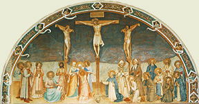
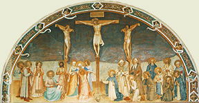

|  |
|---|
Textum Taurini 1953 editum
et automato translatum a Roberto Busa SJ in taenias magneticas
denuo recognovit Enrique Alarcón atque instruxit


|  |
|---|


[85974] Catena in Io., cap. 1 l. 1 Chrysostomus in Ioannem. Omnibus aliis Evangelistis ab incarnatione incipientibus, Ioannes transcurrens conceptionem, nativitatem, educationem, augmentationem, mox de aeterna nobis generatione narrat, dicens in principio erat verbum. Augustinus Lib. 83 quaest. Quod Graece logos dicitur, Latine et rationem et verbum significat; sed hoc melius verbum interpretatur, ut significetur non solum ad patrem respectus, sed ad illa etiam quae per verbum facta sunt operativa potentia. Ratio autem, etsi nihil per eam fiat, recte ratio dicitur. Augustinus in Ioannem. Quotidie autem dicendo verba viluerunt nobis, quia sonando et transeundo viluerunt. Est verbum et in ipso homine quod manet intus: nam sonus procedit ex ore. Est verbum quod vere specialiter dicitur illud quod intelligis de sono, non ipse sonus. Augustinus de Trin. Quisquis autem potest intelligere verbum, non solum antequam sonet, verum etiam antequam sonorum eius imagines cogitatione volvantur, iam potest videre per hoc speculum atque in hoc aenigmate aliquam verbi similitudinem, de quo dictum est in principio erat verbum. Necesse est enim cum id quod scimus loquimur, ut ex ipsa scientia quam memoria tenemus, nascatur verbum, quod eiusmodi sit omnino cuiusmodi est illa scientia de qua nascitur. Formata quippe cogitatio ab ea re quam scimus, verbum est, quod in corde dicimus; quod nec Graecum est, nec Latinum, nec linguae alicuius. Sed cum id opus est in eorum quibus loquimur proferre notitiam, aliquod signum quo significetur assumitur. Proinde verbum quod foris sonat, signum est verbi quod intus latet, cui magis verbi competit nomen: nam illud quod profertur carnis ore, vox verbi est, verbumque et ipsum dicitur propter illud a quo ut foris appareat sumptum est. Basilius. Hoc autem verbum non est humanum verbum. Quomodo enim erat in principio humanum verbum, ultimo loco accipiente homine generationis principium? Non igitur in principio verbum erat humanum, sed nec Angelorum: omnis enim creatura infra saeculorum terminos est, a creatore essendi sumens principium. Sed audi Evangelium decenter: ipsum enim, unigenitum verbum dixit. Chrysostomus in Ioannem. Si autem quis dixerit: cur patrem dimittens, mox nobis de filio loquitur? Quoniam ille quidem manifestus omnibus erat, etsi non ut pater, sed ut Deus, unigenitus autem ignorabatur: ideo decenter eam, quae de isto est, cognitionem confestim initio studuit imponere his qui nesciebant eum; sed neque patrem in his quae de filio sunt sermonibus tacuit. Propter hoc autem et verbum eum vocavit. Quia enim docturus erat quod hoc verbum unigenitus est filius Dei; ut non passibilem aestimet quis generationem, praeveniens verbi nuncupatione, destruit perniciosam suspicionem, esse ex Deo filium impassibiliter ostendens. Secunda vero ratio est, quia ea quae sunt patris nobis annuntiare debebat. Non simpliciter vero eum verbum dixit, sed cum articuli adiectione, a reliquis ipsum separans. Consuetudo enim est Scripturae verba vocare leges Dei et praecepta: hoc autem verbum substantia quaedam est, hypostasis, ens, ex ipso proveniens impassibiliter patre. Basilius. Quare igitur verbum? Quia impassibiliter natum est; quia est generantis imago, totum in seipso generantem demonstrans, nihil inde separans, sed in seipso perfectum existens. Augustinus de Trin. Sicut enim scientia nostra illi scientiae Dei, sic nostrum verbum quod nascitur de nostra scientia, dissimile est illi verbo Dei, quod natum est de patris essentia. Tale est autem, ac si dicerem de patris scientia, de patris sapientia; vel, quod est expressius, de patre scientia, de patre sapientia. Verbum ergo Dei patris unigenitus filius, per omnia patri similis et aequalis: hoc enim est omnino quod pater, non tamen pater: quia iste filius, ille pater: ac per hoc novit omnia quae novit pater; sed ei nosse de patre est, sicut esse: nosse enim et esse ibi unum est; et ideo patri, sicut esse non est a filio, ita nec nosse. Proinde, tamquam seipsum dicens, pater genuit verbum sibi aequale per omnia: non enim seipsum integre perfecteque dixisset, si aliquid minus aut amplius esset in eius verbo quam in seipso. Nostrum autem verbum interius, quod invenimus esse utcumque illi simile, quantum sit etiam dissimile, non pigeat intueri. Est enim verbum mentis nostrae quandoque formabile, nondum formatum, quiddam mentis nostrae, quod hac atque hac volubili quadam motione iactamus, cum a nobis nunc id, nunc illud, sicut inventum fuerit vel occurrerit, cogitatur; et tunc fit verum verbum quando illud quod nos diximus volubili motione iactare, ad id quod scimus pervenit, atque inde formatur, eius omnimodam similitudinem capiens; ut quomodo res quaeque scitur, sic etiam cogitetur. Quis non videat quanta sit hic dissimilitudo ab illo Dei verbo, quod in forma Dei sic est ut non ante fuerit formabile, postea formatum, non aliquando possit esse informe, sed sit forma simplex, et simpliciter aequalis ei de quo est? Quapropter ita dicitur illud Dei verbum, ut Dei cogitatio non dicatur; ne aliquid esse quasi volubile dicatur in Deo, quod nunc habeat, nunc accipiat formam ut verbum sit, eamque possit amittere, atque informiter quodammodo volutari. Augustinus de Verb. Dom. Est enim verbum Dei forma quaedam non formata, sed forma omnium formarum, forma incommutabilis, sine lapsu, sine defectu, sine tempore, sine loco, superans omnia, existens in omnibus fundamentum quoddam, in quo sunt, et fastigium sub quo sunt. Basilius. Habet autem et verbum nostrum exterius divini verbi similitudinem quamdam: nam nostrum verbum totam declarat mentis conceptionem: quae namque mente concepimus, ea verbo proferimus. Et quidem cor nostrum quasi fons quidam est: verbum vero prolatum quasi quidam rivulus manans ex ipso. Chrysostomus in Ioannem. Considera etiam in Evangelista prudentiam spiritualem. Noverat homines id quod antiquius est et quod est ante omnia maxime honorantes et ponentes Deum: propter hoc primum dicit principium: in principio, inquit, erat verbum. Origenes in Ioannem. Plura autem sunt signata ab hoc nomine principium. Est enim principium, sicut itineris et longitudinis, secundum illud: initium boni itineris iustorum exercitium. Est autem principium et generationis, iuxta illud: hoc est principium creaturae domini. Sed etiam Deum non enormiter asseret aliquis omnium principium. Illud etiam ex quo sicut ex praeiacente materia alia fiunt, principium est penes eos qui credunt illam ingenitam. Est enim principium secundum speciem; sicut Christus principium eorum est qui secundum imaginem Dei formati sunt. Est etiam principium disciplinae, secundum illud: cum deberetis esse magistri propter tempus, rursus indigetis ut doceamini quae sunt elementa exordii sermonum Dei. Duplex enim est documenti principium: hoc quidem natura, hoc vero quoad nos; ut si dicatur, initium sapientiae fore natura quidem Christum, inquantum sapientia et verbum Dei est; quoad nos vero inquantum verbum caro factum est. Tot igitur significatis ad praesens nobis de principio occurrentibus, potest accipi illud ex quo quid est agens. Conditor enim Christus est velut principium, secundum quod sapientia est; ut verbum in principio, quasi in sapientia sit. Plura enim bona de salvatore dicuntur. Velut igitur vita in verbo est, sic verbum in principio, idest in sapientia erat. Considera vero si possibile est secundum hoc significatum accipere nos principium, prout secundum sapientiam, et exempla quae in ea sunt, fiunt omnia; vel quia principium filii pater est, et principium creaturarum, et omnium entium; per illud in principio erat verbum, verbum filium intelligas in principio, idest in patre, dictum fore. Augustinus de Trin. Aut in principio sic dictum est ac si diceretur: ante omnia. Basilius. Praevidit enim spiritus sanctus futuros quosdam invidentes gloriae unigeniti, qui praeferrent sophismata ad subversionem auditorum: quia si genitus est, non erat; et antequam genitus esset, non erat. Ne igitur talia garrire praesumant, spiritus sanctus ait in principio erat verbum. Hilarius de Trin. Transeunt tempora, transeunt saecula, tolluntur aetates: pone aliquid quod voles tuae opinionis principium: non tenes tempore: erat enim unde tractatur. Chrysostomus in Ioannem. Sicut autem quis cum stat in navi secus littus, videt civitates et portus, cum vero eum aliquis in medium pelagi duxerit, a prioribus quidem desistere facit, non tamen alicubi defigit ei oculum, ita Evangelista hic super omnem nos ducens creaturam, suspensum dimittit oculum, non dans suspicere aliquem finem ad superiora: hoc enim in principio erat semper et infinite essendi significativum est. Augustinus de Verb. Dom. Sed dicunt: si filius est, natus est; hoc fatemur. Adiungunt deinde: si natus est patri filius, erat pater antequam ei filius nasceretur; hoc respuit fides. Ergo ait: rationem mihi redde quomodo et filius nasci potuit patri, ut coaevus esset ei a quo natus est. Post patrem enim nascitur filius, utique patri morituro successurus. Similitudines adhibent de creaturis; et nobis laborandum est ut et nos inveniamus similitudines earum rerum quas astruimus. Sed quomodo possumus in creatura invenire coaeternum, quando in creatura nil invenimus aeternum? Sed si possunt inveniri haec duo coaeva, generans et generatum, ibi intelligimus coaeterna. Ipsa quidem sapientia dicta est in Scripturis candor lucis aeternae, dicta est imago patris. Hinc capiamus similitudinem, ut inveniamus coaeva, ex quibus intelligamus coaeterna. Nemo autem dubitat, quod splendor de igne exit. Ponamus ergo ignem patrem illius splendoris: mox quidem ut lucernam accendo, simul cum igne et splendor existit. Da mihi hic ignem sine splendore, et credo tibi patrem sine filio fuisse. Imago existit de speculo, hominis intuentis speculum; existit imago mox ut aspector extiterit: sed ille qui inspicit erat antequam accederet ad speculum. Ponamus ergo aliquid natum super aquam, ut virgultum, aut herbam: nonne cum imagine sua nascitur? Si ergo semper esset virgultum, semper esset et imago de virgulto. Quod autem de alio est, utique natum est. Potest ergo semper esse generans, et semper cum illo quod de eo natum est. Sed dicet aliquis: ecce intellexi aeternum patrem, coaeternum filium; tamen sicut effusum splendorem minus igne lucentem, aut sicut effusam imaginem minus quam virgultum existentem dicimus. Non, sed aequalitas omnimoda est. Non credo, ait, quia non invenisti similitudinem. Fortassis autem invenimus in creatura quomodo intelligamus filium et coaeternum patri, et nequaquam minorem; sed non illud possumus invenire in uno genere similitudinum. Iungamus ergo ambo genera: unum unde ipsi dant similitudines, et alterum unde nos dedimus. Dederunt enim illi similitudinem ex his quae praeceduntur tempore ab his a quibus nascuntur, sicut homo de homine; sed tamen homo et homo sunt eiusdem substantiae. Laudamus ergo in ista nativitate aequalitatem naturae: deest aequalitas temporis. In illo autem genere similitudinum quod nos dedimus de splendore ignis et de imagine virgulti, aequalitatem naturae non invenis, invenis coaevitatem. Totum ergo ibi quod hic ex partibus singulis et rebus singulis invenitur; et non hoc solum quod in creaturis, totum invenio ibi sed tamquam in creatore. Ex gestis Conc. Ephes. Propterea alicubi quidem filium appellat patris, alicubi autem verbum nominat, alicubi autem splendorem vocat Scriptura divina; singula horum nominum de ipso dicens, ut intelligas ea quae de Christo dicuntur, esse contra blasphemiam: quia enim tuus filius eiusdem tibi naturae fit, volens sermo ostendere unam substantiam patris et filii, dicit filium patris, qui ex eo natus est unigenitus. Deinde quoniam nativitas et filius apud nos ostentationem praebent passionis; ideo hunc filium appellat et verbum, impassibilitatem nativitatis eius nomine isto demonstrans. Sed quoniam pater quispiam factus ut homo, indubitanter senior filio suo demonstratur; ne hoc ipsum etiam de divina natura putares, splendorem vocat unigenitum patris: splendor enim nascitur quidem ex sole, non autem intelligitur sole posterior. Coexistere ergo semper patri filium splendor tibi denuntiet; impassibilitatem nativitatis ostendat verbum; consubstantialitatem filii nomen insinuet. Chrysostomus in Ioannem. Sed dicunt illi, quoniam hoc, idest in principio, non aeternitatem ostendit simpliciter: etenim et de caelo istud et de terra dictum. In principio, inquit Genesis, fecit Deus caelum et terram. Sed quid commune habet erat ad fecit? Sicut enim quod est, cum de homine quidem dicitur, tempus praesens significat tantum; cum autem de Deo, id quod est semper et aeternaliter; ita et erat de nostra quidem cum dicitur natura, praeteritum significat tempus; cum autem de Deo, aeternitatem ostendit. Origenes. Sum enim verbum duplicem habet significationem: aliquando enim temporales motus secundum analogiam aliorum verborum declarat, aliquando substantiam uniuscuiusque rei, de qua praedicatur, sine temporali motu ullo designat; ideo et substantivum vocatur. Hilarius de Trin. Respice igitur ad mundum, intellige quid de eo scriptum est: in principio fecit Deus caelum et terram. Fit ergo in principio quod creatur, et aetates continet quod in principio continetur ut fieret. Piscator autem illitteratus, indoctus, liber a tempore, solutus a saeculis est, vicit omne principium: erat enim quod est, neque in tempore aliquo concluditur ut coeperit quod erat potius in principio quam fiebat. Alcuinus. Contra eos ergo qui propter temporalem nativitatem dicebant Christum non semper fuisse, incipit Evangelista de aeternitate verbi, dicens in principio erat verbum.
[85975] Catena in Io., cap. 1 l. 2 Chrysostomus in Ioannem. Quia maxime Dei hoc est proprium, aeternum et sine principio esse; hoc primum posuit: deinde ne quis audiens in principio erat verbum, ingenitum verbum dicat, confestim hoc removit dicens et verbum erat apud Deum. Hilarius de Trin. Sine principio enim est apud Deum, et qui abest a tempore, non abest ab auctore. Basilius. Rursus hoc dicit propter blasphemantes quod non erat. Ubi ergo erat verbum? Non in loco incircumscriptibilia continentur. Sed ubi erat? Apud Deum: neque pater loco, neque filius circumscriptione aliqua continentur. Origenes in Ioannem. Utile est etiam inducere, quod verbum dicitur ad aliquos fieri, puta ad Osee, vel Isaiam, aut Ieremiam: ad Deum autem non fit, quasi prius non ens apud ipsum: ex eo igitur quod iugiter est in eo, dicitur et verbum erat apud Deum: quia nec a principio a patre separatus est. Chrysostomus in Ioannem. Non etiam dixit: in Deo erat, sed apud Deum erat, eam quae secundum hypostasim eius est aeternitatem nobis ostendens. Theophylactus. Videtur autem mihi quod Sabellius ex hoc dicto subversus est. Ipse enim dicebat, quod pater et filius et spiritus sanctus una est persona, quae aliquando ut pater apparuit, aliquando ut filius, aliquando ut spiritus sanctus. Manifeste vero confunditur ex hoc verbo: et verbum erat apud Deum. Hic enim Evangelista alium declarat esse filium, alium Deum, scilicet patrem.
[85976] Catena in Io., cap. 1 l. 3 Hilarius de Trin. Dices: verbum sonus vocis est, enuntiatio negotiorum, et elocutio cogitationum: hoc verbum in principio apud Deum erat, quia sermo cogitationis aeternus est, cum qui cogitat sit aeternus. Sed quomodo in principio erat quod neque ante tempus, neque post tempus est? Et nescio an ipsum possit esse in tempore. Loquentium enim sermo neque est antequam loquantur, et cum locuti erunt, non erit: in eo enim ipso quod loquuntur, dum finiunt, iam non erit id unde coeperunt. Sed si primam sententiam rudis auditor admiseras, in principio erat verbum, de sequenti quid quaeris: et verbum erat apud Deum? Numquid audieras de Deo, ut sermonem reconditae cogitationis acciperes; aut fefellerat Ioannem quid esset momenti inter inesse et adesse? Id enim quod in principio erat, non in altero esse, sed cum altero praedicatur. Statum igitur verbi et nomen expecta; dicit namque et Deus erat verbum. Cessat sonus vocis et cogitationis eloquium. Verbum hic res est, non sonus; natura, non sermo; Deus, non inanitas est. Hilarius de Trin. Simplex autem nuncupatio est, et caret offendiculo adiectionis alienae. Ad Moysen dictum est: dedi te Deum Pharaoni: sed numquid non adiecta nominis causa est, cum dicitur Pharaoni? Moyses enim Pharaoni Deus datus est, dum timetur, dum oratur, dum punit, dum medetur. Et aliud est Deum dari, et aliud Deum esse. Memini quoque et alterius nuncupationis, ubi dicitur: ego dixi: dii estis; sed in eo indulti nominis significatio est; et ubi refertur ego dixi, loquentis potius sermo est, quam rei nomen. Cum autem audio et Deus erat verbum, non dictum solum audio verbum, sed demonstratum esse intelligo quod Deus est. Basilius. Sic igitur excludens accusationem blasphemantium et quaerentium quid est verbum, respondet et Deus erat verbum. Theophylactus. Vel aliter continua. Postquam verbum erat apud Deum, manifestum est quod duae personae erant, quamvis una natura in duabus existat; unde dicitur et Deus erat verbum; ita ut una natura sit patri et filio, cum sit una deitas. Origenes. Adiciendum etiam, quod verbum in eo quod fit ad prophetas, illustrat prophetas sapientiae lumine: apud Deum vero est verbum obtinens ab eo quod sit Deus; unde praelocavit hoc quod est verbum erat apud Deum, ei quod est Deus erat verbum. Chrysostomus in Ioannem. Et non ut Plato, hoc quidem intellectum quemdam, hoc vero animam mundi esse dicens: haec enim procul sunt a divina natura. Sed dicunt: pater cum articuli adiectione dictus est Deus, filius autem sine hac. Quid ergo, cum apostolus dicat: magni Dei et salvatoris nostri Iesu Christi; et rursus: qui est super omnia Deus; sed et Romanis scribens dicit: gratia vobis, et pax a Deo patre nostro sine adiectione articuli. Sed et superfluum erat hic apponere superius continue adiectum. Non igitur etsi non est adiectus filio articulus, propter hoc filius minor est Deus.
[85977] Catena in Io., cap. 1 l. 4 Hilarius de Trin. Quia dixerat Deus erat verbum, trepido in dicto, et me insolens sermo commovet, cum unum Deum prophetae nuntiaverunt. Sed ne quo ultra trepidatio mea progredi possit, reddit sacramenti tanti piscator dispensationem, et refert ad unum omnia, sine contumelia, sine abolitione, sine tempore, dicens hoc erat in principio apud Deum: apud unum ingenitum Deum, ex quo ipse unius unigenitus Deus est, praedicatur. Theophylactus. Et rursus ne suspicio diabolica aliquos conturbaret, ne forte cum verbum Deus sit, insurrexerit contra patrem, ut aliqui fabulantur gentilium, et separatus a patre fuerit ipsi patri contrarius, dicit hoc erat in principio apud Deum; quasi dicat: hoc Dei verbum nunquam a Deo extitit separatum. Chrysostomus in Ioannem. Vel ne audiens in principio erat verbum, aeviternum quidem aestimes, seniorem vero spatio aliquo patris vitam suscipias, induxit hoc erat in principio apud Deum: non enim fuit unquam solitarius ab illo; sed semper Deus apud Deum erat. Vel quia dixerat Deus erat verbum, ut non aestimet quis minorem esse deitatem filii, confestim cognoscitiva propriae deitatis ponit, et aeternitatem assumens, cum dicit hoc erat in principio apud Deum; et quod factum est adiciens omnia per ipsum facta sunt. Origenes. Vel aliter. Postquam praemiserat tres propositiones Evangelista, resumit tria in unum, dicens hoc erat in principio apud Deum. In primo enim trium didicimus in quo erat verbum, quia in principio erat; in secundo apud quem, quia apud Deum; in tertio quid erat verbum, quia Deus. Velut ergo demonstrans verbum praedictum, Deum, per hoc quod dicit hoc, et colligens in propositionem quartam hoc quod est in principio erat verbum, et verbum erat apud Deum, et Deus erat verbum, ait hoc erat in principio apud Deum. Quaerat autem aliquis, cur non est dictum: in principio erat verbum Dei, et verbum Dei erat apud Deum, et Deus erat verbum Dei. Quisquis autem unicam veritatem fatebitur esse; palam est quoniam et demonstratio eius, quae est sapientia, una est. Sed si veritas una, et sapientia una, verbum quoque quod veritatem enuntiat, et sapientiam expandit in his qui susceptibiles sunt, unum siquidem erit. Nec hoc dicimus inficiantes verbum Dei fore, sed ostendentes utilitatem omissionis huius vocabuli Dei. Ipse quoque Ioannes in Apocalypsi dicit: et nomen eius verbum Dei. Alcuinus. Qualiter autem ponit substantivum verbum erat? Ut intelligeres omnia tempora praevenisse coaeternum Deo patri verbum.
[85978] Catena in Io., cap. 1 l. 5 Alcuinus. Postquam dixit de natura filii, de operatione eius subiungit, dicens omnia per ipsum facta sunt; idest, quidquid est, sive in substantia, sive in aliqua proprietate. Hilarius de Trin. Vel aliter. Erat quidem verbum in principio, sed potuit non esse ante principium. Sed quid ille? Omnia per ipsum facta sunt. Infinitum est per quod fit omne quod factum est; et cum ab eo sint omnia, et tempus ab eo est. Chrysostomus in Ioannem. Moyses quidem incipiens Scripturam veteris testamenti, de sensibilibus nobis loquitur, et haec enumerat per multa: in principio enim fecit Deus caelum et terram. Deinde inducit, quoniam et lux facta est, et firmamentum et stellarum naturae, et genera animalium. Evangelista vero haec omnia excedens uno verbo comprehendit, ut cognita auditoribus, ad altiorem festinans materiam, totum hunc librum instituens non de operibus, sed de conditore. Augustinus super Genesim. Cum enim dicitur omnia per ipsum facta sunt, satis ostenditur et lux per ipsum facta, cum dixit Deus: fiat lux; et similiter de aliis. Quod si ita est, aeternum est, quod ait Deus: fiat lux, quia verbum Dei, Deus apud Deum, patri coaeternus est, quamvis creatura temporalis facta sit. Cum enim verba sint temporis, cum dicimus: quando et aliquando; aeternum tamen est in verbo Dei, quando aliquid fieri debeat; et tunc fit quando fieri debuisse in illo verbo est, in quo non est quando et aliquando: quoniam totum illud verbum aeternum est. Augustinus super Ioannem. Quomodo ergo potest fieri ut verbum Dei factum sit, quando Deus per verbum fecit omnia? Si et verbum ipsum factum est, per quod aliud verbum factum est? Si hoc dicis, quia est verbum verbi, per quod factum est illud; ipsum dico ego unigenitum filium Dei. Si autem non dicis verbum Dei, concede non factum verbum per quod facta sunt omnia. Augustinus de Trin. Et si factum non est, creatura non est; si autem creatura non est, eiusdem cum patre substantiae est, omnis enim substantia quae Deus non est, creatura est: et quae creatura non est, Deus est. Theophylactus. Solent autem Ariani dicere, quod sicut per serram ostium fieri dicimus, quasi per organum, sic et per filium omnia facta fuisse dicuntur, non quod ipse sit factor, sed organum; et sic facturam aiunt filium, tamquam factum ad hoc ut per eum omnia fierent. Nos autem ad huiusmodi fictores mendacii simpliciter respondemus. Si enim, ut dicitis, pater creasset ad hoc filium ut eo tamquam organo uteretur, videretur quod inhonorabilior sit filius quam quae facta sunt; sicut ea quae per serram sunt facta, ipso organo nobiliora existunt; nam serra propter ipsa facta est. Sic et propter ipsa quae facta sunt, ut aiunt, pater creavit filium; tamquam si non deberet Deus cuncta creare, nequaquam filium produxisset. Quid his verbis insanius? Sed aiunt: quare non dixit quod omnia verbum fecit; sed usus est hac praepositione per? Ne filium ingenitum intelligeres, et sine principio, et Dei conditorem. Chrysostomus in Ioannem. Sed si praepositio per conturbat te, et quaeris in Scriptura quod ipsum verbum omnia faceret, audi David: initio tu, domine, terram fundasti, et opera manuum tuarum sunt caeli. Quod autem hoc de unigenito dixerit, addisces ab apostolo utente hoc verbo in epistola ad Hebraeos de filio. Si vero de patre hoc prophetam dixisse dicis, Paulum vero filio adaptasse; idem fit rursus. Neque enim id filio convenire dixisset, nisi vehementer consideraret quoniam quae sunt dignitatis, cohonorabilia sunt utrique. Si rursus per praepositio aliquam subiectionem tibi videtur inducere, cur Paulus eam de patre ponit? Fidelis dominus, per quem vocati sumus in societatem filii eius. Et iterum: Paulus apostolus per voluntatem Dei. Origenes. Erravit etiam in hoc Valentinus, dicens verbum esse quod mundanae creationis praestitit causam creatori. Sed si sic se habet veritas rerum, prout ipse intelligit, oportebat scriptum fore per creatorem universa consistere a verbo, non autem e contra per verbum a creatore.
[85979] Catena in Io., cap. 1 l. 6 Chrysostomus in Ioannem. Ut non aestimes, dum dicit omnia per ipsum facta sunt, illa omnia solum dicere eum quae a Moyse dicta sunt, convenienter inducit et sine ipso factum est nihil, sive visibile quid, sive intelligibile. Vel aliter. Ne hoc quod dixit omnia per ipsum facta sunt, de signis suspiceris nunc dici, de quibus reliqui Evangelistae locuti sunt, inducit et sine ipso factum est nihil. Hilarius de Trin. Vel aliter. Hoc quod dicitur, omnia per ipsum facta sunt, non habet modum: est ingenitus qui factus a nemine est, est et ipse genitus ab innato. Reddidit auctorem cum socium professus est, dicens sine ipso factum est nihil; cum enim nihil sine eo, intelligo non esse solum: quia alius est per quem, alius sine quo non. Origenes. Vel aliter. Ne existimares ea quae per verbum facta sunt, per se existentia, non contenta a verbo, ait et sine ipso factum est nihil; hoc est, nihil factum est extra ipsum; quia ipse ambit omnia, conservans ea. Augustinus de quaest. Nov. et Vet. Testam. Vel dicens sine ipso factum est nihil, nullo modo ipsum facturam esse suspicari debere edocuit. Quomodo enim potest dici: ipse est factura, cum nihil dicatur Deus sine ipso fecisse? Origenes super Ioannem. Vel aliter. Si omnia per verbum facta sunt: de numero vero omnium est malitia, et totus fluxus peccati; et haec per verbum facta sunt; et hoc est falsum. Quantum igitur ad significata, nihil et non ens, unum sunt. Videtur autem apostolus non entia prava dicere: vocat Deus ea quae non sunt tamquam ea quae sunt. Totaque pravitas nihil dicitur, dum absque verbo facta est. Augustinus in Ioannem. Peccatum enim non per ipsum factum est: et manifestum est quia peccatum nihil est, et nihil fiunt homines cum peccant. Et idolum non per verbum factum est: habet quidem formam quamdam humanam, et ipse homo per verbum factus est; sed forma hominis in idolo non per verbum facta est: scriptum est enim: scimus quod nihil est idolum. Ergo ista non sunt facta per verbum; sed quaecumque facta sunt naturaliter, universa natura rerum, omnis omnino creatura ab Angelo usque ad vermiculum. Origenes. Valentinus autem exclusit ab omnibus per verbum factis quae sunt in saeculis facta, quae credit ante verbum extitisse, praeter evidentiam loquens; siquidem quae putantur ab eo divina, removentur ab omnibus, quae autem, velut ipse putat, penitus destruuntur, vere dicuntur omnia. Quidam enim falso dicunt Diabolum non esse creaturam Dei: inquantum enim Diabolus est, creatura Dei non est: is autem cui accidit esse Diabolum, divina est creatura; ac si diceremus, homicidam creaturam Dei non esse, qui tamen in eo quod homo est, creatura Dei est. Augustinus de natura boni. Non autem sunt audienda deliramenta hominum, qui nihil hoc loco aliquid intelligendum esse putant, quia ipsum nihil in fine sententiae positum est; nec intelligunt nihil interesse utrum dicatur: sine ipso nihil factum est, an sine ipso factum est nihil. Origenes. Si accipiatur verbum pro eo quod in quolibet hominum est, quia et ipsum insitum est cuilibet ab eo quod in principio erat verbum, etiam sine hoc verbo nihil committimus, simpliciter accipiendo quod dicitur nihil. Ait enim apostolus quod sine lege peccatum mortuum erat; adveniente vero mandato peccatum revixit: non enim reputatur peccatum, lege non existente; sed nec peccatum erat, non existente verbo: quia dominus dicit: si non venissem et essem illis locutus, peccatum non haberent. Quaelibet enim excusatio deficit volenti dare responsum de crimine, dum verbo praesente ac iudicante quid est agendum, non obedit quis illi. Nec propter hoc inculpandum est verbum, sicut nec magister, per cuius disciplinam non remanet locus excusationis discipulo delinquenti velut de ignorantia. Omnia ergo per verbum facta sunt, non solum naturalia, sed etiam quae ab irrationabilibus fiunt.
[85980] Catena in Io., cap. 1 l. 7 Beda in Ioannem. Quia Evangelista dixit omnem creaturam factam esse per verbum, ne quis forte crederet mutabilem eius voluntatem, quasi qui subito vellet facere creaturam quam ab aeterno nunquam ante fecisset, ideo docere curavit, factam quidem creaturam in tempore; sed in aeterna creatoris sapientia, quando et quos crearet semper fuisse dispositum; unde dicit quod factum est in ipso, vita erat. Augustinus in Ioannem. Potest autem sic punctari: quod factum est in ipso; et postea dicatur vita erat. Ergo totum vita est, si sic pronuntiaverimus: quid enim non in illo factum est? Ipse est enim sapientia Dei, et dicitur in Psalmo 103, 24: omnia in sapientia fecisti. Omnia igitur sicut per illum, ita et in illo facta sunt. Si ergo quod in illo factum est, vita est, ergo et terra vita est, et lapis vita est. Inhonestum est sic intelligere, ne nobis subrepat secta Manichaeorum, et dicat quia habet vitam lapis, et habet vitam paries: solent enim ista delirantes dicere; et cum reprehensi fuerint ac repulsi, quasi de Scripturis proferunt dicentes: ut quid dictum est: quod factum est in ipso, vita erat? Pronuntia ergo sic quod factum est: hic subdistingue; et deinde infer in ipso vita erat. Facta est enim terra; sed ipsa terra quae facta est non est vita. Est autem in ipsa Dei sapientia spiritualiter ratio quaedam qua terra facta est; haec vita est. Sicut arca in omni opere non est vita; arca in arte vita est, quia vivit anima artificis. Sic ergo quia sapientia Dei, per quam facta sunt omnia, secundum artem continet omnia quae fiunt per ipsam artem, non haec continuo sunt vita; sed quidquid factum est, vita est in illo. Origenes. Potest autem et sic distingui sine errore: quod factum est in ipso, et postea dicatur vita erat; ut sit sensus: omnia quae per ipsum et in ipso facta sunt, in ipso vita sunt, et unum sunt. Erant enim, hoc est in ipso subsistunt causaliter, priusquam sint in seipsis effective. Sed si quaeris, quomodo et qua ratione omnia quae per verbum facta sunt, in ipso vitaliter et uniformiter et causaliter subsistunt, accipe exempla ex creaturarum natura. Conspice quomodo omnium rerum quas mundi huius sensibilis globositas comprehendit, causae simul et uniformiter in isto sole, qui est maximum mundi luminare, subsistunt; quomodo numerositas herbarum et fructuum in singulis seminibus simul continetur; quomodo multiplices regulae in arte artificis unum sunt, et in animo disponentis vivunt; quomodo infinitus linearum numerus in uno puncto unum subsistit; et huiusmodi varia perspice exempla, ex quibus velut physicae theoriae pennis poteris arcana verbi mentis acie inspicere, et quantum datur humanis rationibus, videre quomodo omnia quae per verbum sunt facta, in ipso vivunt et facta sunt. Hilarius de Trin. Vel aliter potest legi: in eo quod dixerat sine ipso factum est nihil, posset aliquis perturbatus dicere: est ergo aliquid per alterum factum, quod tamen non sit sine eo factum; et si aliquid per alterum, licet non sine eo, iam non per eum omnia; quia aliud est fecisse, aliud est intervenisse facienti. Enarrat ergo Evangelista quid non sine eo factum sit, dicens quod factum est in eo. Hoc igitur non sine eo quod in eo factum est: nam id quod in eo factum est, etiam per eum factum est: omnia enim per ipsum et in ipso creata sunt. In ipso autem creata, quia nascebatur creator Deus; sed ex hoc sine eo nihil factum est, quod tamen in eo factum est, quia nascens Deus vita erat, et qui vita erat, non posteaquam natus erat, factus est vita. Nihil ergo sine eo fiebat ex his quae in eo fiebant, quia vita est in quo fiebant; et Deus qui ab eo natus est, non posteaquam natus est, sed nascendo quoque extitit. Chrysostomus in Ioannem. Vel aliter. Non apponemus finale punctum, ubi dicitur sine ipso factum est nihil, secundum haereticos. Illi enim volentes spiritum sanctum creatum dicere, aiunt quod factum est in ipso, vita erat. Sed ita non potest intelligi. Primum quidem neque tempus erat hic spiritus sancti meminisse; sed si de sancto spiritu hoc dictum est, age, secundum eorum interim legamus modum: ita enim nobis hoc inconveniens erit; cum enim dicitur quod factum est in ipso, vita erat, spiritum sanctum dicunt dictum esse vitam; sed vita haec et lux invenitur esse; inducit enim vita erat lux hominum. Quocirca, secundum eos, lucem omnium hunc spiritum dicit. Quod autem superius verbum dicit, hic consequenter et Deum et vitam et lucem nominat. Verbum autem caro factum est: erit igitur spiritus sanctus incarnatus, non filius. Ideo dimittentes hunc modum legendi, ad decentem veniamus lectionem et expositionem; hoc autem est cum dicitur omnia per ipsum facta sunt, et sine ipso factum est nihil quod factum est; ibi quiescere fac sermonem; deinde ab ea quae deinceps est dictione incipe, quae dicit in ipso vita erat; ac si dicat sine eo factum est nihil quod factum est, idest factibilium. Vides qualiter hac brevi adiectione omnia correxit supervenientia inconvenientia. Inducens enim sine eo factum est nihil, et adiciens quod factum est, et intelligibilia comprehendit, et spiritum sanctum excepit: spiritus enim sanctus factibilis non est. Haec igitur quae dicta sunt, de conditione rerum dixit Ioannes. Inducit autem et eum qui est de providentia sermonem, dicens in ipso vita erat. Quemadmodum in fonte qui generat abyssos, et in nullo minoratur fons; ita et in operatione unigeniti quaecumque credas per eum facta esse, non minor ipse factus est. Nomen autem vitae hic non solum conditionis est, sed et providentiae rerum, quae est secundum permanentiam earum. Cum autem audis quoniam in ipso vita erat, ne compositum aestimes: sicut enim pater habet vitam in seipso, ita dedit et filio vitam habere. Ergo sicut patrem non utique dices compositum esse, ita nec filium. Origenes in Ioannem. Vel aliter. Oportet scire, quod salvator quaedam dicit non sibi esse, sed aliis; quaedam vero et sibi et aliis. In hoc ergo quod dicitur quod factum est in verbo, vita erat, scrutandum est an sibi et aliis vita est, vel aliis tantum; et si aliis, quibus aliis. Idem autem est vita et lux; lux autem hominum est: fit itaque hominum vita, quorum est lux; et sic in eo quod dicitur vita, salvator dicitur non sibi, sed aliis. Haec quidem vita verbo praeexistenti aderit, ex eo quod expiata a peccatis anima sit serena, et vita inseratur ei qui verbi Dei se susceptibilem statuit. Unde verbum quidem in principio non dixit factum: non enim erat quando principium verbo careret. Vita autem hominum non semper erat in verbo; sed haec vita hominum facta est, eo quod vita est lux hominum: cum enim homo non erat, nec lux hominum erat, luce secundum habitudinem ad homines intellecta; et ideo dicit quod factum est in verbo, vita erat; non autem: quod erat in verbo, vita erat. Invenitur autem alia littera non incongrue habens: quod factum est in eo, vita est. Si autem intelligamus vitam hominum quae in verbo fit, eum esse qui dixit: ego sum vita, fatebimur neminem infidelium Christi vivere, sed cunctos esse mortuos qui non vivunt in Deo.
[85981] Catena in Io., cap. 1 l. 8 Theophylactus. Dixerat in ipso vita erat, ne putares quod absque vita sit verbum; nunc ostendit quod vita sit spiritalis, et lux rationalibus cunctis; unde dicitur et vita erat lux hominum; quasi dicat: lux ista non est sensibilis, sed intellectualis, illuminans ipsam animam. Augustinus super Ioannem. Ex ipsa enim vita illuminantur homines, pecora non illuminantur, quia non habent rationales mentes, quae possint videre sapientiam; homo autem factus ad imaginem Dei, habet rationalem mentem, per quam possit percipere sapientiam. Ergo illa vita per quam facta sunt omnia, lux est, et non quorumcumque animalium, sed hominum. Theophylactus. Non autem dixit: lux est solum Iudaeis, sed omnium hominum; omnes enim homines, inquantum intellectum et rationem recepimus ab eo quod nos condidit verbo, intantum ab eo illuminari dicimur: nam ratio nobis tradita, per quam rationales dicimur, lux est ad operanda nos dirigens et non operanda. Origenes in Ioannem. Non est autem praetermittendum quod vitam praemittit luci hominum: inconsequens enim erat illuminari non viventem, et advenire illuminationi vitam. Si autem idem est vita erat lux hominum, quod solum hominum, erit Christus lux atque vita solorum hominum. Hoc autem opinari haereticum est. Non igitur quidquid dicitur aliquorum, illorum solum est: scriptum est enim de Deo, quod sit Deus Abraham, Isaac et Iacob; non tamen istorum tantum patrum dictus est Deus. Non ergo ex eo quod dicitur lux hominum, excluditur quin sit aliorum. Alius vero contendit ex eo quod scriptum est: faciamus hominem ad imaginem nostram: quod quidquid ad imaginem ac similitudinem Dei factum est, intelligi debet per hominem. Sic igitur lux hominum lux cuiuslibet rationalis creaturae est.
[85982] Catena in Io., cap. 1 l. 9 Augustinus in Ioannem. Quia vita illa est lux hominum, sed stulta corda capere istam lucem non possunt, quia peccatis suis aggravantur, ut eam videre non possint; ne ideo cogitent quasi absentem esse lucem, quia eam videre non possunt, sequitur et lux in tenebris lucet, et tenebrae eam non comprehenderunt. Quomodo enim homo positus in sole caecus, praesens est illi sol, sed ipse soli absens est; sic omnis stultus caecus est, et praesens est illi sapientia. Sed cum caeco praesens est, oculis eius absens est: non quia illa ipsi absens est, sed quia ipse absens est ab illa. Origenes in Ioannem. Tenebrae autem huiusmodi hominum non natura sunt, secundum illud Pauli: eramus aliquando tenebrae, nunc autem lux in domino. Origenes. Vel aliter. Lux in tenebris fidelium animarum lucet, a fide inchoans, ad spem trahens. Imperitorum vero cordium perfidia et ignorantia lucem verbi Dei in carne fulgentis non comprehenderunt. Sed iste sensus moralis est. Physica vero horum verborum theoria talis est. Humana natura, etsi non peccaret, suis propriis viribus non lucere posset: non enim naturaliter lux est, sed particeps lucis: capax siquidem sapientiae est, non ipsa sapientia. Sicut ergo aer per semetipsum non lucet, sed tenebrarum vocabulo nuncupatur; ita nostra natura dum per seipsam consideratur, quaedam tenebrosa substantia est, capax ac particeps lucis sapientiae: et sicut aer dum solares radios participat, non dicitur per se lucere, sed solis splendor in eo apparere; ita rationabilis nostrae naturae pars, dum praesentiam verbi Dei possidet, non per se res intelligibiles et Deum suum, sed per insitum sibi divinum lumen cognoscit. Lux itaque in tenebris lucet: quia Dei verbum vita et lux hominum in nostra natura, quae per se investigata et considerata, informis quaedam tenebrositas invenitur, lucere non desinit: et quoniam ipsa lux omni creaturae est incomprehensibilis, tenebrae eam non comprehenderunt. Chrysostomus in Ioannem. Vel aliter totum ab illo loco et vita erat lux hominum. Primum nos de conditione docuerat; deinde dicit et quae secundum animam bona praebuit nobis veniens verbum; unde dicit et vita erat lux hominum. Non dicit: lux Iudaeorum; sed universaliter hominum: non enim Iudaei solum, sed et gentes ad hanc venerunt cognitionem. Non autem adiecit: et Angelorum; quoniam ei de natura humana sermo est, quibus verbum venit evangelizans bona. Origenes. Quaerunt autem quare non verbum lux hominum dictum est, sed vita quae in verbo fit; quibus respondemus: quia vita quae ad praesens, non ea quae communis est rationalium et irrationalium dicitur, sed quae adiungitur verbo quod in nobis fit per participationem verbi primarii, ad discernendum apparentem vitam et non veram, et cupiendam veram vitam. Prius ergo participamus vitam quae apud quosdam quidem est potentia, non actu lux; qui scilicet non sunt avidi perquirere quae ad scientiam pertinent; apud quosdam vero et actu lux efficitur, qui, secundum apostolum, aemulantur dona meliora, scilicet verbum sapientiae. Si tamen et tunc idem est vita et lux hominum, nullus manens in tenebris perfecte vivere comprobatur, nec quisquam viventium consistit in tenebris. Chrysostomus in Ioannem. Vita enim adveniente nobis, solutum est mortis imperium; et luce lucente nobis, non ultra sunt tenebrae; sed semper manet vita quam mors superare non potest, nec tenebrae lucem; unde sequitur et lux in tenebris lucet. Tenebras mortem et errorem dicit: nam lux quidem sensibilis non in tenebris lucet, sed sine illis; praedicatio vero Christi in medio erroris regnantis fulsit; et eum disparere fecit, et in vitam mortem fecit mortuus Christus, ita eam superans ut eos qui detinebantur reduceret. Quia igitur neque mors eam superavit, neque error; sed fulgida est eius praedicatio ubique, et lucet cum propria fortitudine; propterea subdit et tenebrae eam non comprehenderunt. Origenes. Est etiam sciendum, quod sicut lux hominum nomen est duarum spiritualium rerum, sic et tenebrae: dicimus enim hominem lucem possidentem, opera lucis perficere, et etiam cognoscere quasi illustratum lumine scientiae; et e contrario tenebras dicimus illicitos actus, et eam quae videtur scientia, non est autem. Sicut autem pater lux est, et in eo tenebrae non sunt ullae, sic et salvator. Sed quia similitudinem carnis peccati subiit, non incongrue de eo dicitur, quod tenebrae in eo sunt aliquae, ipso in se suscipiente nostras tenebras ut eas dissiparet. Haec igitur lux, quae facta est vita hominum, radiat in tenebris animarum nostrarum, et venit ubi princeps tenebrarum harum cum genere bellat humano. Hanc lucem persecutae sunt tenebrae: quod patet ex his quae salvator et eius filii sustinent, pugnantibus tenebris contra filios lucis. Verum quia Deus patrocinatur, non invalescunt; unde non apprehendunt lucem, vel quia celeritatem cursus lucis subsequi non valent propter propriam tarditatem, vel quia si supervenientem expectant, fugantur luce appropinquante. Oportet autem id considerare, quod non semper tenebrae in sinistra parte sumuntur, sed quandoque in bona, posuit tenebras latibulum suum, dum ea quae sunt erga Deum, ignota et imperceptibilia sunt. De hac ergo laudata caligine dicam, quoniam versus lucem pergit, illamque apprehendit: quia quod erat caligo, dum ignorabatur, in lucem cognitam vertitur ei qui didicit. Augustinus de Civ. Dei. Hoc autem initium sancti Evangelii quidam Platonicus aureis litteris perscribendum, et per omnes Ecclesias in locis eminentissimis proponendum esse dicebat. Beda in Ioannem. Nam alii Evangelistae Christum in tempore natum describunt, Ioannes vero eumdem in principio testatur fuisse, dicens in principio erat verbum. Alii inter homines eum subito apparuisse commemorant; ille ipsum apud Deum semper fuisse testatur, dicens et verbum erat apud Deum. Alii eum verum hominem, ille verum confirmat Deum, dicens et Deus erat verbum. Alii hominem apud homines eum temporaliter conversatum; ille Deum apud Deum in principio manentem ostendit, dicens hoc erat in principio apud Deum. Alii magnalia quae in homine gessit perhibent; ille quod omnem creaturam per ipsum Deus pater fecerit, docet, dicens omnia per ipsum facta sunt, et sine ipso factum est nihil.
[85983] Catena in Io., cap. 1 l. 10 Augustinus in Ioannem. Ea quae dicta sunt superius, de divinitate Christi dicta sunt, qui sic venit ad nos secundum quod apparuit homo. Quia igitur sic erat homo ut lateret in illo Deus, missus est ante illum magnus homo, per cuius testimonium inveniretur plusquam homo. Et quis est hic? Fuit homo. Theophylactus. Non Angelus, ut suspicionem multorum destrueret. Augustinus. Et quomodo posset iste verum de Deo dicere, nisi missus a Deo? Chrysostomus in Ioannem. Nihil de reliquo humanum esse aestimo eorum quae dicuntur ab illo: non enim quae eius sunt, sed quae mittentis omnia loquitur: ideo et Angelus nuncupatus est a propheta dicente: ego mitto Angelum meum. Angeli enim virtus est nihil proprium dicere. Hoc autem quod dicit fuit missus, non eius qui ad esse processus ostensivum est. Sicut autem Isaias missus fuit non aliunde quam a mundo, sed a statu quo vidit dominum sedentem super solium excelsum et elevatum, ad plebem; sic et Ioannes a deserto ad baptizandum mittitur; ait enim: qui misit me baptizare, ille mihi dixit: super quem videris spiritum descendentem et manentem super eum, hic est qui baptizat in spiritu sancto. Augustinus. Quid vocabatur? Cui nomen erat Ioannes. Alcuinus. Idest gratia Dei, vel in quo est gratia, qui gratiam novi testamenti, idest Christum, suo testimonio primum mundo innotuit. Vel Ioannes interpretatur cui donatum est, quia per gratiam Dei donatum est illi regem regum non solum praecurrere, sed etiam baptizare. Augustinus in Ioannem. Quare venit? Hic venit in testimonium, ut testimonium perhiberet de lumine. Origenes in Ioannem. Quidam improbare nituntur edita de Christo testimonia prophetarum, dicentes non egere testibus Dei filium habentem credulitatis sufficientiam tum in his quae protulit salubribus verbis, tum in mirabilibus operibus suis. Siquidem et Moyses credi meruit per verbum et virtutes, non egens praeviis testibus. Ad hoc dicendum est, quod multis existentibus causis inducentibus ad credendum, plerumque quidam ex hac demonstratione non admirantur, ex alia vero habent causam ut credant. Deus autem est qui pro cunctis hominibus homo factus est. Constat igitur quosdam ex dictis propheticis ad Christi admirationem coactos, mirantes tot prophetarum ante eius adventum voces, constituentes nativitatis eius locum, et alia huiusmodi. Illud quoque advertendum, quod prodigiosae virtutes ad credendum provocare poterant eos qui tempore Christi erant, non autem post longa tempora: nam fabulosa quaedam aestimata fuerunt: plus enim peractis virtutibus facit ad credulitatem quae cum virtutibus quaeritur prophetia. Est autem et tale quid dicere, quod quidam in hoc quod testimonium perhibent Deo, honorati sunt. Privare vult ergo chorum prophetarum ingenti gratia qui dicit, illos non oportere de Christo testimonium exhibere. Accessit autem his Ioannes, ut testimonium de luce perhibeat. Chrysostomus in Ioannem. Non ea indigente testimonio, sed propter quid, ipse Ioannes docet, dicens ut omnes crederent per illum. Sicut enim carnem induit, ne omnes perderet; ita et praeconem hominem misit, ut cognatam audientes vocem, facilius advenirent. Beda. Non autem ait: ut omnes crederent in illum: maledictus enim homo qui confidit in homine; sed ut omnes crederent per illum; hoc est, per illius testimonium crederent in lucem. Theophylactus. Si vero aliqui non crediderint, excusabilis permanet ipse: nam sicut si aliquis includens se in domo caliginis, et ipsum solis radius non illustret, ipse causam tribuit, et non sol; sic Ioannes, ut omnes crederent, missus fuit; sed si minime consecutum est, ipse huius rei causa non extitit. Chrysostomus. Quia vero multum apud nos maior qui testatur, eo cui testimonium perhibet, et dignior fide esse videtur; ne quis et de Ioanne hoc suspicetur, hanc suspicionem destruit, dicens non erat ille lux; sed ut testimonium perhiberet de lumine. Si vero non huic instans opinioni hoc resumpsit ut testimonium perhiberet de lumine, superfluum esset quod dicitur, et magis iteratio sermonis quam explanatio doctrinae. Theophylactus. Sed dicet aliquis: ergo neque Ioannem, neque sanctorum quempiam lucem esse vel fuisse dicemus. Sed si sanctorum aliquem lucem velimus dicere, ponemus lucem absque articulo; ut si interrogatus fueris utrum Ioannes est lux sine articulo, secure concedas; si vero cum articulo, non concedas. Non enim est ipsa lux principalior; sed lux dicitur quia secundum participationem lucem habeat a vero lumine.
[85984] Catena in Io., cap. 1 l. 11 Augustinus in Ioannem. De quo lumine Ioannes testimonium perhibeat, ostendit dicens erat lux vera. Chrysostomus in Ioannem. Vel aliter. Quia superius de Ioanne dixerat, quod venit et missus est ut testetur de luce, ne quis hoc audiens propter testantis recentem praesentiam, de eo cui testimonium perhibetur, talem quamdam suspicionem accipiat, reduxit mentem, et ad eam quae supra omne principium est, transmisit existentiam, dicens erat lux vera. Augustinus. Quare additum est vera? Quia et homo illuminatus dicitur lux; sed vera lux illa est quae illuminat; nam et oculi nostri dicuntur lumina, et tamen nisi aut per noctem lucerna accendatur, aut per diem sol exeat, lumina illa sine causa patent; unde subdit quae illuminat omnem hominem. Si omnem hominem, ergo et ipsum Ioannem. Ipse ergo illuminabat, a quo se demonstrari volebat. Quomodo enim plerumque fit ut in aliquo corpore radiato cognoscatur ortus esse sol quem oculis videre non possumus; quia etiam qui saucios habet oculos, idonei sunt videre parietem illuminatum, aut aliquid huiusmodi; sic omnes ad quos venerat Christus, minus erant idonei eum videre. Radiavit Ioannem, et per illum confitentem se illuminatum cognitus est ille qui illuminat. Dicit autem venientem in hunc mundum, nam si illinc non recederet, non esset illuminandus; sed ideo hic illuminandus, quia illinc recessit ubi homo poterat esse illuminatus. Theophylactus. Erubescat Manichaeus, qui conditoris maligni et tenebrosi nos asserit creaturas: non enim illuminaremur, si veri luminis creaturae non essemus. Chrysostomus in Ioannem. Ubi sunt etiam qui non dicunt eum verum Deum? Hic enim lux vera dicitur. Sed si illuminat omnem hominem venientem in hunc mundum, qualiter tot sine lumine permanserunt? Non enim omnes cognoverunt Christi culturam. Illuminat igitur omnem hominem quantum ad eum pertinet; si autem quidam mentis oculos claudentes noluerunt recipere lucis huius radios, non a lucis natura obtenebratio est eis, sed a malitia eorum, qui voluntarie privant seipsos gratiae dono: nam gratia quidem ad omnes effusa est; qui vero nolunt dono hoc frui, sibi ipsis hanc imputent caecitatem. Augustinus Enchir. Vel quod dicitur illuminat omnem hominem, sic intelligimus: non quia nullus est hominum qui non illuminetur; sed quia nisi ab ipso nullus illuminatur. Beda. Sive naturali ingenio, sive sapientia divina: sicut enim nemo a seipso esse, sic etiam nemo a seipso sapiens esse potest. Origenes. Vel aliter. Non de his qui de occultis seminum causis in species corporales procedunt, debemus intelligere quod illuminat omnem hominem venientem in hunc mundum; sed de his qui spiritualiter per regenerationem gratiae, quae datur in Baptismate, in mundum veniunt invisibilem. Eos itaque vera lux illuminat qui in mundum virtutum veniunt, non eos qui in mundum vitiorum ruunt. Theophylactus. Vel aliter. Intellectus nobis traditus, ac nos dirigens, qui et naturalis ratio nominatur, dicitur lux tradita nobis a Deo. Sed quidam male ratione utentes, seipsos obscuraverunt.
[85985] Catena in Io., cap. 1 l. 12 Augustinus in Ioannem. Lux quae illuminat omnem hominem venientem in hunc mundum, huc venit per carnem: quia dum hic esset per divinitatem, a stultis, caecis et iniquis videri non poterat, de quibus supra dictum est tenebrae eam non comprehenderunt: et ideo dicitur in mundo erat. Origenes. Ut enim qui loquitur, dum loqui cessat, vox eius esse desinit, et evanescit, sic caelestis pater, si verbum suum loqui cessaverit, effectus verbi, hoc est universitas verbo condita, non subsisteret. Non autem putes quia sic erat in mundo quomodo in mundo est terra, pecora, et homines; sed quomodo artifex regens quod fecit; unde sequitur et mundus per ipsum factus est. Non enim sic fecit quomodo facit faber: qui enim fabricat, extrinsecus est ad illud quod fabricat. Deus autem infusus mundo, fabricat ubique positus, et non recedit ab aliquo: praesentia maiestatis facit quod facit, et gubernat quod facit. Sic ergo erat in mundo, quomodo per quem factus est mundus. Chrysostomus. Et iterum, quia in mundo erat, sed non ut mundi contemporaneus, propter hoc induxit et mundus per ipsum factus est; per hoc et rursus te deducens ad aeternam existentiam unigeniti; qui enim audierit quoniam opus eius hoc totum, et si valde insensibilis fuerit, cogetur concedere ante opera esse factorem. Theophylactus. Simul autem hic et Manichaei subvertit rabiem, qui malignum conditorem cuncta produxisse dicebat; necnon et Arii, qui filium Dei dicebat creaturam. Augustinus. Quid est autem mundus per ipsum factus est? Caelum, terra, mare et omnia quae in eis sunt, mundus dicitur. Iterum in alia significatione, dilectores mundi mundus dicuntur; de quo sequitur et mundus eum non cognovit. Num enim caeli, aut Angeli, aut sidera non cognoverunt creatorem, quem confitentur Daemonia, omnia undique testimonium perhibuerunt? Sed qui non cognoverunt eum? Qui amando mundum, dicti sunt mundus: amando enim mundum, habitamus corde in mundo: nam qui non diligunt mundum, carne versantur in mundo, sed corde inhabitant caelum; sicut apostolus dicit: nostra conversatio in caelis est. Amando igitur mundum, hoc appellari meruerunt ubi habitant. Quomodo enim cum dicimus: mala est illa domus aut bona, non parietes incusamus aut laudamus, sed inhabitantes, sic et mundum dicimus qui inhabitant mundum amando. Chrysostomus in Ioannem. Qui autem Dei erant amici, eum cognoverunt, etiam ante corporalem praesentiam: unde et Christus ait quoniam Abraham pater vester exultavit ut videret diem meum. Cum ergo nos interpellant gentiles, dicentes: quid est quod in ultimo tempore venit nostram operaturus salutem, tanto tempore negligens nos? Dicimus, quoniam et ante hoc in mundo erat, et providebat operibus suis, et omnibus dignis cognitus erat: et si eum mundus non cognovit, hi tamen quibus mundus non erat dignus, eum cognoverunt. Dicens autem mundus eum non cognovit, breviter causam ignorantiae praebuit. Mundum enim vocat homines qui soli mundo affixi sunt, et quae mundi sunt sapiunt. Nihil autem ita turbat mentem, ut liquefieri amore praesentium.
[85986] Catena in Io., cap. 1 l. 13 Chrysostomus in Ioannem. Dixit quod mundus eum non cognovit, de superioribus loquens temporibus; sed de reliquo sermonem induxit ad praedicationis tempora, et ait in propria venit. Augustinus in Ioannem. Quia scilicet omnia per ipsum facta sunt. Theophylactus. Vel per propria mundum intelligas, sive Iudaeam, quam pro hereditate elegerat. Chrysostomus in Ioannem. In propria ergo venit, non gratia suae necessitatis, sed gratia beneficii suorum. Sed unde venit qui omnia implet, et ubique adest? Ea quidem quae ad nos condescensione hoc operatus est: quia enim in mundo existens, non putabatur adesse, eo quod nondum cognoscebatur, dignatus est induere carnem. Manifestationem vero hanc et condescensionem adventum vocat. Misericors autem existens Deus omnia facit, ut nos secundum virtutem splendeamus; et propter hoc quidem nullum necessitate, suasione vero et beneficiis volentes ad se attrahit; et propterea venientem eum hi quidem susceperunt, alii vero non receperunt. Nullum enim vult invitum neque coactum habere famulatum: invitum enim trahi, par est cum eo qui totaliter non servit; unde sequitur et sui eum non receperunt. In Ioannem. Iudaeos nunc suos dicit, ut populum peculiarem; sed et omnes homines ut ab ipso factos: et sicut superius pro communi verecundatus natura dicebat, quoniam mundus per ipsum factus conditorem non cognovit, ita et hic rursus pro Iudaeorum anxius indevotione gravius ponit accusationem, dicens et sui eum non receperunt. Augustinus. Si autem omnino nullus recepit, nullus ergo salvus factus est. Nemo enim salvus fiet, nisi qui Christum receperit venientem; et ideo addit quotquot autem receperunt eum. Chrysostomus in Ioannem. Sive sint servi sive liberi, sive Graeci sive barbari, sive insipientes sive sapientes, sive mulieres sive viri, sive pueri, sive senes, omnes eodem digni facti sunt honore, de quo sequitur dedit eis potestatem filios Dei fieri. Augustinus. Magna benevolentia. Unicus natus est, et noluit manere unus; non timuit habere coheredes, quia hereditas eius non fit angusta, si eam multi possederint. Chrysostomus. Non autem dixit, quoniam fecit eos filios Dei fieri; sed dedit eis potestatem filios Dei fieri; ostendens quoniam multo opus est studio, ut eam, quae in Baptismo adoptionis formata est, imaginem incontaminatam semper custodiamus: simul autem ostendens quoniam potestatem hanc nullus nobis auferre poterit, nisi nos ipsi auferamus. Si enim qui ab hominibus dominium aliquarum rerum suscipiunt, tantum habent robur quantum fere hi qui dederunt; multo magis nos qui a Deo potimur hoc honore. Simul autem ostendere vult quoniam haec gratia advenit volentibus et studentibus: etenim in potestate est liberi arbitrii et gratiae operatione filios Dei fieri. Theophylactus. Vel quia in resurrectione filiationem perfectissimam consequemur, secundum quod apostolus dicit: adoptionem filiorum Dei expectantes redemptionem corporis nostri. Dedit ergo potestatem filios Dei fieri, idest hanc gratiam in futura gratia consequendi. Chrysostomus. Et quia in his ipsis ineffabilibus bonis, hoc quidem est Dei, scilicet dare gratiam; illud vero hominis, idest praebere fidem, subiungit his qui credunt in nomine eius. Quid igitur non dicis nobis, o Ioannes, quod eorum sit supplicium qui eum non receperunt? Quia numquid isto supplicio fiet maius quando praeiacente eis potestate filios Dei fieri, non fiant, sed volentes seipsos tanto privant honore? Sed etiam inextinguibilis eos suscipiet ignis, quod postea manifestius revelabit. Augustinus. Credentes ergo quia filii Dei fiunt et fratres Christi, utique nascuntur; nam si non nascuntur, filii quomodo esse possunt? Sed filii hominum nascuntur ex carne et sanguine, et ex voluntate viri, et complexu coniugii. Illi autem quomodo nascuntur subdit qui non ex sanguinibus, tamquam maris et feminae. Sanguina vel sanguines non est Latinum; sed quia Graece positum est pluraliter, maluit ille qui interpretabatur, sic ponere, et quasi minus Latine loqui secundum grammaticos, et tamen explicare veritatem secundum auditum infirmorum. Ex sanguinibus enim maris et feminae homines nascuntur. Beda. Sciendum etiam est, quia in Scripturis sanctis sanguis, cum dicitur pluraliter, peccatum significare solet; unde: libera me de sanguinibus. Augustinus in Ioannem. In eo autem quod sequitur neque ex voluntate carnis, neque ex voluntate viri, carnem pro femina posuit: quia de costa facta cum esset, Adam dixit: hoc nunc os de ossibus meis, et caro de carne mea. Ponitur ergo caro pro uxore quomodo aliquando spiritus pro marito: quia ille imperare debet, ista servire. Quid enim peius est domo ubi femina habet imperium super virum? Hi ergo neque ex voluntate carnis, neque ex voluntate viri, sed ex Deo nati sunt. Beda. Carnalis enim singulorum generatio a complexu coniugii duxit originem: at vero spiritualis spiritus sancti gratia ministratur. Chrysostomus. Hoc autem narrat Evangelista, ut vilitatem et humilitatem prioris partus, qui est per sanguinem et voluntatem carnis, addiscentes, et altitudinem secundi, qui per gratiam et nobilitatem est, cognoscentes, magnam quamdam hic suscipiamus intelligentiam et dignam dono ipsius qui genuit, et multum post hoc studium demonstremus.
[85987] Catena in Io., cap. 1 l. 14 Augustinus in Ioannem. Cum dixisset ex Deo nati sunt, quasi ne miraremur et horreremus tantam gratiam, et nobis incredibile videretur, quia homines ex Deo nati sunt; quasi securitatem faciens, ait et verbum caro factum est. Quid ergo miraris quia homines ex Deo nascuntur? Attende ipsum Deum ex hominibus natum. Chrysostomus in Ioannem. Vel aliter. Cum dixisset quoniam ex Deo nati sunt qui susceperunt eum, huius honoris posuit causam, hoc scilicet verbum fieri carnem: factus est enim proprius filius Dei hominis filius, ut filius hominum faciat filios Dei. Cum autem audieris quoniam verbum caro factum est, ne turberis: neque enim substantiam convertit in carnem; hoc enim vere impium est intelligere; sed manens quod est, servi formam assumpsit. Quia enim sunt qui dicunt, quoniam phantasmata quaedam fuerint omnia quae incarnationis sunt; eorum blasphemiam destruens, hanc dictionem factum est posuit, non transmutationem substantiae, sed carnis verae assumptionem repraesentare volens. Si vero dixerint: quoniam Deus omnipotens est, quare et in carnem transmutari non potuit? Dicemus quod transmutari ab illa incommutabili natura omnino procul est. Augustinus de Trin. Sicut autem verbum nostrum vox quodammodo corporis fit assumendo eam in qua manifestatur sensibus hominum, sic verbum Dei caro factum est, assumendo eam in qua et ipsum manifestaretur sensibus hominum. Et sicut verbum nostrum fit vox, nec mutatur in vocem, ita verbum Dei caro quidem factum est; sed absit ut mutaretur in carnem: assumendo quippe illam, non in eam se consumendo, et hoc nostrum vox fit, et illud caro factum est. Ex gestis Concilii Ephesini. Sermo etiam quem proferimus, quo in alterutris locutionibus utimur, sermo est incorporeus, non aspectui subiectus, non tactu tractabilis; sed cum sermo induerit litteras et elementa, visibilis fit, aspectu comprehenditur, tactu tractatur, sic et verbum Dei, quod naturaliter invisibile est, visibile fit; et quod natura incorporeum est, invenitur esse tractabile. Alcuinus. Cum etiam credamus animam incorpoream corpori coniungi, ut ex his duobus fiat unus homo, facilius possumus credere divinam substantiam incorpoream animae in corpore coniungi in unionem personae; ita ut verbum in carnem non sit conversum, nec caro in verbum; cum nec corpus in animam, nec anima convertatur in corpus. Theophylactus. Apollinarius autem Laodicensis in hoc verbo haeresim statuit: dicebat enim, quod Christus animam rationalem non habuit sed tantum carnem; habens divinitatem pro anima, quae corpus dirigit et gubernat. Augustinus contra Serm. Arian. Si autem moventur in eo quod scriptum est, quod verbum caro factum est, nec ibi anima nominatur; intelligant carnem pro homine positam, a parte totum, figuratae locutionis modo, sicuti est: ad te omnis caro veniet; item quod ex operibus legis non iustificabitur omnis caro; quod apertius alio loco dicitur: non iustificabitur homo ex operibus legis. Sic itaque dictum est verbum caro factum est; ac si diceret: verbum homo factum est. Theophylactus. Evangelista volens ostendere inenarrabilem Dei condescensum, carnem commemorat, ut illius admiremur misericordiam, quoniam propter nostram salutem quod omnino remotum et distans est ab eius natura, assumpsit, scilicet carnem; anima namque habet aliquam propinquitatem ad Deum. Si autem verbum incarnatum est, et humanam animam non assumpsit; sequeretur quod adhuc animae nostrae curatae non essent: quod enim non assumpsit, non sanctificavit. Et qualis derisio, cum anima prius peccaverit, ut carnem assumendo sanctificaverit, id quod est principalius infirmum reliquerit? Subvertitur ex hoc dicto Nestorius, qui dicebat quod non Deus verbum ipse idem factus est homo ex sacro conceptus sanguine virginis; sed virgo peperit hominem qui omnis virtutis dotatus erat specie, et Dei verbum illi erat coniunctum: et ex hoc duos filios asserebat: unum natum de virgine, scilicet hominem; alterum de Deo, scilicet Dei filium, homini illi coniunctum secundum gratiae habitudinem et amorem. Contra quem Evangelista dixit, quod ipsum verbum factum est homo, non quod verbum inveniens hominem virtuosum, se sibi coniunxerit. Cyrillus ad Nestorium. Carnem enim animatam anima rationali uniens verbum sibi secundum subsistentiam, ineffabiliter et inintelligibiliter factus est homo, et appellatus est filius hominis, non secundum voluntatem solam aut beneplacitum, sed neque in assumptione personae solius. Diversae quidem quoad unionem collatae naturae; unus autem ex ambabus Christus et filius; non quasi differentia naturarum interempta propter adunationem. Theophylactus. Addiscimus ergo per hoc quod dicitur verbum caro factum est, quia ipsum verbum est homo, et filius Dei existens factus est filius mulieris; quae principaliter Dei genitrix nuncupatur, tamquam Deum in carne genuerit. Hilarius de Trin. Quidam autem volentes unigenitum Deum, qui in principio apud Deum erat Deus verbum, non substantivum Deum esse, sed sermonem vocis emissae, ut quod loquentibus verbum suum, hoc sit patri Deo filius, argute subrepere volunt, ne subsistens verbum Deus, et manens in forma Dei Christus homo natus sit: ut cum hominem illum humanae potius originis causa quam spiritualis conceptionis sacramentum animaverit, non Deus verbum hominem se ex partu virginis efficiens extiterit; sed, ut in prophetis spiritus prophetiae, ita in Iesu verbum Dei fuerit. Et arguere nos solent, quod Christum dicamus esse natum non nostri corporis atque animae hominem, cum nos verbum carnem factum, nostrae similitudinis natum hominem praedicemus, ut vere Dei filius vere filius hominis natus sit; et ut per se sibi assumpsit ex virgine corpus, ita ex se sibi animam assumpsit; quae utique ab homine numquam gignentium originibus praebetur: et cum ipse ille filius hominis sit, quam ridicule praeter Dei filium, qui verbum caro factum est, alium nescio quem tamquam prophetam verbo Dei animatum praedicabimus, cum dominus Iesus Christus et Dei filius et hominis filius sit? Chrysostomus. Ne autem ab eo quod dictum est verbum caro factum est, inconvenienter suspiceris versionem illius incorruptibilis naturae, subdit et habitavit in nobis. Quod enim habitat, non idem est cum habitaculo, sed aliud: aliud autem dico secundum naturam: unione vero et copulatione unum est Deus verbum caro, neque confusione facta, neque destructione substantiarum. Alcuinus. Vel habitavit in nobis, idest inter homines conversatus est.
[85988] Catena in Io., cap. 1 l. 15 Chrysostomus in Ioannem. Cum dixisset, quod filii Dei facti sumus, et non aliter quam per hoc quod verbum caro factum est; rursus ipsius dicit et aliud lucrum et vidimus gloriam eius: quam utique non vidissemus, nisi per consortium humanitatis visus esset nobis. Si enim Moysi non sustinuerunt faciem glorificatam videre, sed velamine opus fuit; qualiter divinitatem nudam existentem, inaccessibilem etiam ipsis superioribus virtutibus, nos lutei et terrestres sufferre possemus? Augustinus in Ioannem. Vel aliter. Verbum caro factum est, et habitavit in nobis, ista nativitate collyrium fecit, unde tergerentur oculi nostri, ut possimus videre maiestatem eius per eius humanitatem; et ideo dicitur et vidimus gloriam eius. Gloriam eius nemo posset videre, nisi humilitate carnis sanaretur. Irruerat enim homini quasi pulvis in oculum de terra: oculus iste sauciatus erat, et terra illuc mittitur ut sanetur: caro te obcaecaverat, caro te sanat. Carnalis enim anima facta erat, consentiendo carnalibus affectibus; inde fuerat oculus cordis caecatus: medicus fecit tibi collyrium, quoniam sic venit ut de carne vitia carnis extingueret. Verbum enim caro factum est, ut possis dicere vidimus gloriam eius. Chrysostomus. Subdit autem, quasi unigeniti a patre: quia multi prophetarum glorificati sunt, puta Moyses, Eliseus et alii multi quicumque miracula ostenderunt; sed et Angeli hominibus apparentes, et eam quae est propriae naturae coruscantem lucem manifestantes, sed et Cherubim et Seraphim cum multa gloria visa sunt a propheta. Ab omnibus his nos abducens Evangelista, et supra omnem naturam et conservorum nostrorum claritatem erigens mentem, ad ipsum nos perducit verticem; quasi dicat: non ut prophetae aut alterius hominis, vel Angeli, aut Archangeli, aut alicuius superiorum virtutum, est gloria quam vidimus; sed quasi ipsius regis, ipsius naturalis filii unigeniti. Gregorius Moralium. In sacro enim eloquio sicut et quasi aliquando non pro similitudine ponitur, sed pro veritate; unde et istud, quasi unigeniti a patre. Chrysostomus. Ac si diceret: vidimus gloriam qualem decebat, et conveniens est habere unigenitum et naturalem filium. Consuetudo enim multorum, regem valde ornatum videntium, est ut cum aliis enarrantes non possunt universalem repraesentare claritatem, hoc inducunt: quid oportet multa dicere? Quasi rex ibat. Sic et Ioannes dicit vidimus gloriam eius, gloriam quasi unigeniti a patre. Angeli enim apparentes ut servi, et dominum habentes, omnia agebant; ipse vero ut dominus cum humili forma apparens. Sed et creaturae dominum cognoverunt, stella magos vocans, Angeli pastores, puer exultans in utero: sed et pater testatus est de caelis, et Paraclytus super ipsum advenit; sed et ipsa rerum natura omni tuba clarius clamavit, quoniam rex caelorum advenerat: etenim Daemones fugiebant, infirmitatis species solvebantur, mortuos dimittebant sepulchra, et animas a malitia ad virtutis verticem agebat. Quid utique quis dicat praeceptorum philosophiam, caelestium legum virtutem, angelicae urbanitatis bonam ordinationem? Origenes. Eius autem quod sequitur, plenum gratiae et veritatis, duplex intellectus est. Potest enim de humanitate ac divinitate incarnati verbi accipi; ita ut plenitudo gratiae referatur ad humanitatem, secundum quam Christus caput est Ecclesiae et primogenitus creaturae universae: quoniam maximum et principale gratiae exemplum, qua nullis praecedentibus meritis homo efficitur Deus, in ipso primordialiter manifestatum est. Potest etiam plenitudo gratiae Christi de spiritu sancto intelligi, cuius septiformis operatio humanitatem Christi implevit. Plenitudo vero veritatis ad divinitatem refertur. Origenes in Ioannem. Si vero plenitudinem gratiae et veritatis de novo testamento mavis intelligere, non incongrue pronuntiabis plenitudinem gratiae novi testamenti esse per Christum donatam, et legalium symbolorum veritatem in ipso esse impletam. Theophylactus. Vel plenum gratia, prout eius verbum gratiosum erat, dicente David: diffusa est gratia in labiis tuis; et veritate, secundum quod Moyses et prophetae loquebantur aut operabantur in figura, Christus autem cum veritate.
[85989] Catena in Io., cap. 1 l. 16 Alcuinus. Dixerat superius fuisse missum hominem ad perhibendum testimonium; hic determinat testimonium suum, quod manifeste praecursor pronuntiavit; unde dicitur Ioannes perhibet testimonium de ipso. Chrysostomus in Ioannem. Vel aliter hoc inducit; ac si dicat: non aestimetis quod nos qui fuimus cum eo multo tempore et mensae ipsius communicavimus, propter gratiam hoc testemur; quia Ioannes, qui antea eum non viderat, nec ei commoratus fuerat, ei testimonium perhibebat. Multoties autem Evangelista revolvit eius testimonium, quia multam admirationem huius viri habebant Iudaei. Et alii quidem Evangelistae antiquorum meminerunt prophetarum, dicentes: hoc factum est ut impleatur quod dictum est per prophetam; hic autem altiorem et recentiorem testem inducit, non intendens a servo dominatorem facere fide dignum, sed auditorum imbecillitati condescendens. Quemadmodum enim nisi servi formam assumpsisset, non ita facile susceptibilis factus esset; ita nisi servi voce auditum conservorum praeexcitasset, nequaquam multi Iudaeorum verbum Christi suscepissent. Sequitur et clamat; idest, cum propalatione, cum libertate, sine subtractione omnia praedicat. Non autem a principio dixit, quoniam hic est filius Dei unigenitus naturalis; sed clamat dicens hic erat quem dixi: qui post me venit, ante me factus est, quia prior me erat. Quemadmodum enim matres avium, non confestim pullos suos volationem docent; sed primo quidem extra nidum educunt, postea vero aliam multo velociorem volationem apponunt; sic et Ioannes non confestim Iudaeos ad alta duxit, sed interim paululum a terra eos evolare docuit, dicens, quod Christus melior eo erat; quod non parum interim erat. Et vide qualiter sapienter inducit testimonium: non enim solum apparentem Christum monstrat; sed et antequam apparuisset eum praedicat; quod significatur in hoc quod dicit hic erat de quo dixi. Hoc autem fecit ut facile susceptibilis esset Christus, hominum mente iam praedetenta ab aliis quae de eo dicta erant, et nihil ad hoc humilitas habitus noceret. Ita enim humili et communi omnibus forma Christus utebatur, ut si simul et verba haec audissent de eo, et eum considerassent, Ioannis testimonium derisissent. Theophylactus. Dicit autem qui post me venit, videlicet secundum tempora nativitatis: sex enim mensibus prior Christo Ioannes erat secundum humanitatem. Chrysostomus. Vel hoc non dicit de ea generatione quae est ex Maria: iam enim natus erat Christus quando haec a Ioanne dicebantur; sed de adventu eius ad praedicationem. Dicit autem ante me factus est; idest, clarior est et honorabilior; ac si dicat: non quia prior veni ad praedicandum, ex hoc maiorem me esse illo existimetis. Theophylactus. Ariani vero hanc litteram sic exponunt, volentes ostendere quod Dei filius non est a patre genitus, sed factus, sicut una alia creatura. Augustinus in Ioannem. Non ergo intelligitur: factus est antequam ego essem factus; sed antepositus est mihi. Chrysostomus. Si autem quod dicitur ante me factus est, de productione ad esse intelligeretur, superfluum esset quod additur quia prior me erat. Quis enim est ita insipiens ut ignoret quoniam ex quo ante eum factus est, prior eo erat? Aliter autem e contrario oporteret dicere, scilicet: prior me erat, quia ante me factus est. Ergo quod dicit ante me factus est, de honore intelligitur: hoc enim quod futurum erat, factum dicit, quia consuetudo erat antiquorum prophetarum de futuris quasi de iam praeteritis loqui.
[85990] Catena in Io., cap. 1 l. 17 Origenes. Sermo iste in persona Baptistae de Christo testantis prolatus est; quod plurimos fallit, ex hic usque illuc ille enarravit, credentes in persona Ioannis apostoli recitari, inconsequens autem est putare, subito et quasi intempestive interrumpi Baptistae sermonem ex verbo discipuli; et cuique scienti percipere dictorum collationem, in propatulo constat series dicti; dixerat enim ob hoc ante me factus est, qui prior me erat. Ex hoc autem coniecto priorem me fore, quod ex eius plenitudine ego quidem, et ante me prophetae accepimus gratiam secundam pro prima. Pertigerunt enim et illi post figuras per spiritum ad veritatis speculationem. Hinc etiam perpendimus ex plenitudine eius accipientes, legem quidem per Moysen fore datam, gratiam autem et veritatem per Iesum Christum, nedum fore datam, sed factam; patre quidem legem dante per Moysen, gratiam et veritatem faciente per Iesum. Sed si Iesus est qui dicit: ego sum veritas, quomodo veritas fit per Iesum? Sed intelligendum est, quod ipsa veritas substantialis (ex qua prima veritate et eius imagine sculptae sunt multae veritates in his qui veritatem tractant) nequaquam per Iesum Christum facta est, nec prorsus per aliquem; sed veritas, puta quae consistit in Paulo et apostolis, per Iesum Christum facta est. Chrysostomus in Ioannem. Vel aliter. Coniungit hic testimonio Ioannis Baptistae suum testimonium Ioannes Evangelista, dicens et de plenitudine eius nos omnes accepimus. Non praecursoris est verbum, sed discipuli; quasi dicat: etiam nos omnes duodecim, et omnis plenitudo fidelium, et qui nunc sunt, et futurorum, de plenitudine eius accepimus. Augustinus in Ioannem. Quid autem accepistis? Et gratiam pro gratia: ut nescio quid nos voluerit intelligere de plenitudine eius accepisse, et insuper gratiam pro gratia: accepimus enim de plenitudine eius primo gratiam, et rursus accepimus gratiam pro gratia. Quam gratiam primo accepimus? Fidem. Vocatur enim gratia, quia gratis datur. Hanc ergo accepit gratiam primam peccator, ut eius peccata dimitterentur; et iterum gratiam pro gratia; idest, pro hac gratia in qua ex fide vivimus, recepturi sumus aliam, idest vitam aeternam: vita enim aeterna quasi merces est fidei: sed quia ipsa fides gratia est, vita aeterna gratia est pro gratia. Non erat ista gratia in veteri testamento: quia lex minabatur, non opitulabatur; iubebat, non sanabat: languorem ostendebat, non auferebat, sed praeparabat medico venturo cum gratia et veritate; unde sequitur quia lex per Moysen data est; gratia et veritas per Iesum Christum facta est. Mortem enim temporalem et aeternam occidit mors domini tui: ipsa est gratia quae promissa et non habita erat in lege. Chrysostomus in Ioannem. Vel accepimus gratiam pro gratia; idest, pro veteri novam. Sicut enim est iustitia et iustitia, adoptio et adoptio, circumcisio et circumcisio, ita gratia et gratia; sed illa quidem ut typus, haec vero ut veritas. Hoc autem induxit, ostendens quoniam et Iudaei gratia salvabantur, sed et nos omnes gratia salvi sumus: misericordiae autem et gratiae fuit legem suscipere. Propterea cum dixisset gratiam pro gratia, ostendens magnitudinem eorum quae data sunt, subdit quia lex per Moysen data est, gratia et veritas per Iesum Christum facta est. Et supra quidem Ioannes ad seipsum comparans Christum, ait ante me factus est: hic autem Evangelista ad eum qui illo tempore magis in admiratione apud Iudaeos erat quam Ioannes, Christi comparationem facit, scilicet ad Moysen. Et considera prudentiam. Non personarum, sed rerum comparationem facit, gratiam et veritatem legi opponens; et huic addit data est, quod ministrantis erat; huic autem facta est, quod est regis cum potestate omnia operantis: cum gratia quidem, quia cum potestate omnia dimittebat peccata. Et gratiam quidem eius Baptismatis donum, et adoptio quae per spiritum nobis datur, et alia multa ostendunt: veritatem autem plenius sciemus si figuras veteris legis didicerimus: ea enim quae in novo testamento perficienda erant, in veteri testamento figurae praescripserunt, quas Christus veniens adimplevit. Unde figura data est per Moysen, veritas per Christum facta est. Augustinus de Trin. Vel gratiam referamus ad scientiam, veritatem ad sapientiam: in rebus enim per tempus ortis illa summa gratia est, quod homo in unitate personae coniunctus est Deo: in rebus vero aeternis summa veritas recte tribuitur Dei verbo.
[85991] Catena in Io., cap. 1 l. 18 Origenes in Ioannem. Incongrue Heracleon asserit hoc promulgatum fuisse non a Baptista, sed a discipulo: nam si illud de plenitudine eius nos omnes accepimus, a Baptista prolatum est, quomodo non est sequens, ipsum de gratia Christi suscipientem, et secundam pro prima gratia, confitentemque, legem per Moysen fore traditam, gratiam vero et veritatem per Iesum Christum prodiisse; intellexisse qualiter Deum nemo vidit unquam, quodque unigenitus, cum in patris gremio requiescat, interpretationem ipsi Ioanni, nec non omnibus his qui de perfectione gustaverint, concesserit? Non enim nunc primitus annuntiavit: nam priusquam Abraham fieret, docet nos Abraham exultasse, ut videret eius gloriam. Chrysostomus in Ioannem. Vel aliter. Evangelista ostendens multam eminentiam donorum Christi ad ea quae per Moysen dispensata sunt, vult de reliquo causam rationalem differentiae dicere: nam ille quidem famulus existens, minorum rerum factus est minister; hic vero dominator et regis filius existens, multo maiora nobis attulit coexistens semper patri, et videns eum: propter hoc ita intulit, dicens Deum nemo vidit unquam. Augustinus ad Paulinam. Quid ergo est quod Iacob dicit: vidi dominum facie ad faciem; et quod de Moyse scriptum: quia loquebatur cum Deo facie ad faciem; et illud quod propheta Isaias loquens de seipso ait: vidi dominum Sabaoth sedentem in throno? Gregorius Moralium. Sed patenter datur intelligi quod quamdiu hic mortaliter vivitur, videri per quasdam imagines potest Deus; sed per ipsam naturae suae speciem non potest; ut anima gratia spiritus afflata, per figuras quasdam Deum videat; sed ad ipsam vim eius essentiae non pertingat. Hinc est enim quod Iacob, qui Deum se vidisse testatur, nonnisi Angelum vidit: hinc est quod Moyses, qui cum Deo facie ad faciem loquitur, dicit: ostende mihi temetipsum manifeste, ut videam te. Ex qua eius petitione colligitur, quia eum sitiebat per incircumscriptae naturae suae claritatem cernere, quem iam coeperat per quasdam imagines videre. Chrysostomus. Si autem antiqui patres ipsam viderunt naturam, nequaquam differenter considerassent: simplex enim quaedam est et infigurabilis; non sedet, neque stat, neque ambulat; haec enim corporum sunt: unde et per prophetam dicit: ego visionem multiplicavi eis, et in manibus prophetarum assimilatus sum; hoc est, condescendi eis, non quod eram apparui: quia enim filius Dei per veram carnem appariturus erat nobis, primo excitavit eos videre Deum, sicut possibile erat eis videre. Augustinus ad Paulinam. Sed cum scriptum sit: beati mundo corde, quoniam ipsi Deum videbunt, et iterum: cum apparuerit, similes ei erimus, quoniam videbimus eum sicuti est, quid est quod hic dicitur Deum nemo vidit unquam? An fortasse respondetur, quod illa testimonia de videndo Deo sunt, non de viso? Ipsi enim Deum videbunt, dictum est, non viderunt; et non vidimus, sed: videbimus eum sicuti est: Deum enim nemo vidit unquam: vel in hac vita sicuti ipse est, vel etiam in Angelorum vita, sicut visibilia ista quae corporali visione cernuntur. Gregorius Moralium. Si vero a quibusdam potest in hac corruptibili carne viventibus, sed tamen inaestimabili virtute crescentibus, quodam contemplationis acumine aeterna claritas Dei videri; hoc ab hac sententia non abhorret, quoniam quisquis sapientiam, quae Deus est, videt, huic vitae funditus moritur, ne iam eius amore teneatur. Augustinus super Genesim. Nisi enim ab hac vita quisque quodammodo moriatur, sive omnino exiens de corpore, sive ita aversus et alienatus a carnalibus sensibus, ut merito nesciat, sicut apostolus ait utrum in corpore, an extra corpus sit, non in illam rapitur et subvertitur visionem. Gregorius. Sciendum vero est, quod fuere nonnulli qui Deum dicerent in illa regione beatitudinis in claritate sua conspici, sed in natura minime videri. Quos nimirum minor inquisitionis subtilitas fefellit: neque enim illi simplici et incommutabili essentiae aliud est claritas, aliud natura. Augustinus ad Paulinam. Si autem dicitur, in hoc quod scriptum est Deum nemo vidit unquam, homines tantummodo intelligendos: nam hoc apostolus planius explicans: quem nemo, inquit, hominum vidit, sed nec videre potest, ut ita dictum sit Deum nemo vidit unquam, ac si diceretur: nullus hominum, quaestio illa solvi videbitur, ut non sit huic sententiae contrarium quod dominus ait: Angeli eorum semper vident faciem patris mei; ut scilicet Angelos Deum videre credamus, quem nemo vidit unquam, scilicet hominum. Gregorius. Sunt tamen nonnulli qui nequaquam Deum videre nec Angelos suspicantur. Chrysostomus in Ioannem. Dicentes, quod ipsum quod Deus est, non solum prophetae, sed nec Angeli viderunt, neque Archangeli. Sed si interrogaveris eos, audies de substantia nihil respondentes. Gloria vero in excelsis Deo non solum cantantes, sed et in terra pax hominibus bonae voluntatis. Et si a Cherubim et Seraphim concupiveris aliquid discere, mysticam sanctimonii melodiam audies, et quoniam plenum est caelum et terra gloria eius. Augustinus ad Paulinam. Quod quidem intantum verum est, quia Dei plenitudinem nullus non solum oculis corporis, sed vel ipsa mente aliquando comprehendit. Aliud est enim videre, aliud totum videndo comprehendere: quandoquidem id videtur quod praesens utcumque sentitur; totum autem comprehenditur videndo quod ita videtur ut nihil eius lateat videntem, aut cuius fines circumspici possunt. Chrysostomus. Sic igitur solus patrem videt filius et spiritus sanctus. Quod enim creabilis est naturae, qualiter poterit videre quod increabile est? Ita igitur nullus novit Deum, ut filius; unde sequitur unigenitus filius, qui est in sinu patris, ipse enarravit. Ne propter nominis communionem unum quemdam eorum qui gratia facti sunt filiorum esse existimes eum, primo quidem adiectus est articulus. Si vero hoc non sufficit tibi, audi aliud nomen unigenitus. Hilarius de Trin. Naturae quidem fides non satis explicata videbatur ex nomine filii, nisi proprietatis virtus per exceptionis significantiam adderetur; praeter filium enim et unigenitum nihil cognominans, suspicionem penitus adoptionis exclusit, cum veritatem nominis unigeniti natura praestaret. Chrysostomus. Sed et aliud posuit, dicens qui est in sinu patris. Etenim in sinu conversari multo plus est quam simpliciter videre: nam qui simpliciter videt, non omnino eius quod videt cognitionem habet: qui vero in sinu conversatur, nihil ignorabit. Cum igitur audieris quod nullus cognoscit patrem nisi filius, nequaquam dicas, quoniam etsi plus omnibus novit patrem, sed non quantus est novit eum: propterea Evangelista in sinu patris eum morari dicit, ut non aestimemus per id aliud significatum quam familiaritatem unigeniti, et coaeternitatem ad patrem. Augustinus in Ioannem. In sinu enim patris, idest in secreto patris: non enim Deus habet sinum, quemadmodum nos habemus in vestibus; aut cogitandus est sic sedere quomodo nos; aut forte cinctus est, ut sinum haberet: sed quia sinus noster intus est, secretum patris sinus patris vocatur. Qui ergo in secreto patris novit patrem, ipse enarravit quod vidit. Chrysostomus in Ioannem. Sed quid enarravit? Quoniam unus est Deus. Sed et hoc reliqui prophetae et Moyses clamant: quid ergo plus didicimus a filio in sinibus paternalibus existente? Primum quidem ipsa haec quae alii narraverunt, sunt enarrata ex operatione unigeniti; deinde quoniam multo maiorem suscepimus doctrinam per unigenitum, et cognovimus quoniam spiritus est Deus, et quod eos qui adorant eum, in spiritu et veritate adorare oportet, et quoniam Deus pater est unigeniti. Beda. Praeterea sciendum, quia si ad praeteritum referatur quod ait enarravit, homo factus enarravit quid de Trinitatis unitate sentiendum, qualiter ad eius contemplationem properandum, quibus actibus sit perveniendum. Si vero referatur ad futurum, tunc enarrabit cum electos suos ad visionem claritatis suae inducet. Augustinus. Fuerunt autem homines qui dicerent, vanitate cordis sui decepti: pater invisibilis est, filius autem visibilis est. Si ergo propter carnem filius visibilis dicitur, et nos concedimus, et est Catholica fides; si autem, ut ipsi dicunt, antequam incarnaretur, multum delirant, si Christus sapientia Dei et virtus Dei est: sapientia enim Dei videri oculis non potest. Si verbum hominis oculis non videtur, verbum Dei sic videri potest? Chrysostomus. Non igitur soli ipsi proprium est Deum nemo vidit unquam, sed et filio: quia, ut Paulus dicit, est imago Dei invisibilis; qui vero invisibilis imago est, et ipse invisibilis est.
[85992] Catena in Io., cap. 1 l. 19 Origenes. Secundum legitur hoc testimonium a Ioanne Baptista de Christo prolatum, incipiente primo illic: hic est de quo dixi, et desinente ibi: ipse enarravit. Theophylactus. Vel aliter. Postquam superius dixit Evangelista, quod Ioannes testabatur de Christo: ante me factus est, nunc subiungit quando praemissum testimonium reddiderit Christo Ioannes; unde dicit et hoc est testimonium Ioannis, quando miserunt Iudaei ab Hierosolymis sacerdotes et Levitas ad Ioannem. Origenes. Iudaei quidem ab Hierosolymis, ut cognati existentes Baptistae de stirpe sacerdotali existentis, sacerdotes et Levitas destinant, sciscitaturos quis esset Ioannes; eos scilicet qui reputati sunt secundum electionem ab aliis differre; et ab electo Hierosolymorum loco. Ioannem itaque quaerunt cum tanta veneratione; erga Christum autem nihil huiusmodi factum legitur a Iudaeis. Sed quod erga Ioannem Iudaei, hoc Ioannes erga Christum prosequitur, per proprios discipulos interrogans: tu es qui venturus es, an alium expectamus? Chrysostomus in Ioannem. Sic autem fide dignum aestimaverunt esse Ioannem, ut ei de seipso dicenti crederent; unde dicitur ut interrogarent eum: tu quis es? Augustinus in Ioannem. Non autem mitterent nisi moverentur excellentia auctoritatis eius, quia ausus est baptizare. Origenes. Ioannes autem, ut videtur, discernebat ex quaestione, sacerdotum et Levitarum dubitationem, ne forte Christus esset baptizans; apertius tamen illud profiteri cavebant, ne temerarii putarentur. Quapropter merito, ut eorum opinio fallax de eo primitus aboleretur, ac subinde veritas propalaretur, quod non sit Christus ante omnia manifestat; unde sequitur et confessus est, et non negavit: et confessus est: quia non sum ego Christus. Hic etiam adiciamus, quia tempus adventus Christi populum recreabat quodammodo iam praesens existens, legisperitis ex sacris Scripturis illius tempus speratum colligentibus: propter quod Theodas non modicam multitudinem quasi Christus congregavit, et post illum Iudas Galilaeus in diebus professionis. Cum ergo ferventius Christi expectaretur adventus, Iudaei transmittunt ad Ioannem, per hoc quod est tu quis es? Conicere volentes si ipse se Christum fateretur. Non autem ex eo quod dicit non sum ego Christus, negavit: ex hoc enim ipso confessus est veritatem. Gregorius in Evang. Negavit plane quod non erat, sed non negavit quod erat, ut veritatem loquens, eius membrum fieret cuius sibi nomen fallaciter non usurparet. Chrysostomus in Ioannem. Vel aliter. Passi erant Iudaei quamdam humanam passionem ad Ioannem. Indignum enim aestimabant, subici eum Christo propter multa quae Ioannis claritatem demonstrabant: quorum primum erat genus illustre, principis enim sacerdotum filius erat; deinde dura educatio, humanorum despectio. In Christo autem contrarium videbatur: genus humile, quod ei exprobrabant dicentes: nonne hic est fabri filius? Dieta communis, et vestimenta nihil plus multis habentia. Quia igitur Ioannes continue ad Christum mittebat, volentes magis Ioannem habere magistrum, mittunt ad eum, opinantes per blanditias eum allicere ad confitendum se Christum esse. Non ergo quosdam contemptibiles mittunt, ut ad Christum, ministros et Herodianos, sed sacerdotes et Levitas; et non quoscumque, sed eos qui erant ex Hierosolymis, hoc est honorabiliores; et ad hoc mittunt ut interrogarent tu quis es? Non quasi ignorantes, sed volentes eum inducere ad hoc quod dixi: unde Ioannes ad mentem et non ad interrogationem eis respondit et confessus est, et non negavit; et confessus est: quia non sum ego Christus. Et vide sapientiam Evangelistae. Tertio quasi idem dicit, et virtutem Baptistae indicans, et malitiam et amentiam Iudaeorum. Devoti enim famuli est, non solum non rapere gloriam domini, sed oblatam a multis respuere. Turbae quidem ex ignorantia ad hanc venerunt suspicionem ut Ioannem Christum aestimaret; hi vero a maligna mente, ex qua interrogabant eum, aestimantes per blanditias attrahere ad hoc quod volebant: nisi enim excogitassent hoc, respondenti non sum ego Christus, dixissent: non hoc suspicati sumus, non hoc venimus interrogaturi. Sed capti et manifesti effecti ad aliud veniunt; unde sequitur et interrogaverunt eum: quid ergo? Elias es tu? Augustinus. Noverant enim quod praecessurus erat Elias Christum: non enim alicui ignotum erat nomen Christi apud Hebraeos; sed non putabant illum esse Christum; nec tamen omnino putaverunt Christum non esse venturum; et cum sperarent futurum, offenderunt in praesentem. Sequitur et dixit: non sum. Gregorius in Evang. Ex his verbis nobis quaestio valde implexa generatur. Alio quippe in loco inquisitus a discipulis dominus de Eliae adventu, respondit: si vultis scire, Ioannes ipse est Elias. Requisitus autem Ioannes dicit non sum Elias. Quomodo ergo propheta veritatis est si eiusdem veritatis sermonibus concors non est? Origenes. Dicet aliquis quod se ignorabat Ioannes esse Eliam; et hoc nimirum utentur documento qui assistunt iteratae incorporationis rationi, tamquam anima denuo induente corpora. Quaerunt enim Iudaei per Levitas ac sacerdotes, an esset Elias, cum iteratae corporis assumptionis documentum verax arbitrantur, quasi paternum existens, nec alienum ab arcanorum suorum doctrina. Ob hoc itaque dicit Ioannes: Elias non sum; nam nescit primaevam vitam propriam. Qualiter autem videtur rationabile, si tamquam propheta spiritu illuminatus est, et de Deo et unigenito tanta narravit, ignorasse de seipso an unquam eius anima fuerit in Elia? Gregorius in Evang. Sed si subtiliter veritas ipsa requiratur, hoc quidem quod inter se contrarium sonat, quomodo contrarium non sit invenitur. Ad Zachariam namque de Ioanne Angelus dixit: ipse praecedet ante illum in spiritu et virtute Eliae, quia scilicet sicut Elias secundum domini adventum praeveniet, ita Ioannes praevenit primum; sicut ille praecursor venturus est iudicis, ita iste praecursor factus est redemptoris. Ioannes igitur in spiritu Elias erat, in persona Elias non erat. Quod autem dominus fatetur de spiritu, hoc Ioannes denegat de persona: quia et iustum sic erat ut discipulis dominus spiritalem de Ioanne sententiam diceret, et Ioannes turbis carnalibus non de suo spiritu, sed de corpore responderet. Origenes. Respondit ergo Levitis et sacerdotibus: non sum, coniectans propositum quaestionis eorum: non enim sapiebat praemissa examinatio, si idem spiritus esset in utroque; sed si Ioannes esset ipse Elias qui assumptus est, nunc apparens, secundum quod a Iudaeis expectabatur, absque nativitate. Primus autem arbitrans resumptionem corporum, dicet, quod inconsequens est filium Zachariae tanti sacerdotis in senio natum, super omnem humanam expectationem, ignorari a sacerdotibus et Levitis ipsum natum fuisse; maxime Luca testante quod factus est timor in omnibus habitantibus circa eos. Sed forsan quoniam prope finem Eliam expectabant ante Christum, quasi tropice sciscitari videntur: an es tu qui praenuntias Christum venturum? Et caute respondit: non sum. Sed nihil mirabile. Sicut in salvatore, pluribus scientibus ex Maria nativitatem eius, quidam fallebantur putantes eum Ioannem Baptistam vel Eliam, aut aliquem prophetarum; sic et in Ioanne quosdam ortus eius ex Zacharia non latebat; et quidam dubitabant, si forsan qui expectabatur Elias apparuit in Ioanne. Quoniam vero cum plures in Israel editi fuerint prophetae, unus de quo Moyses prophetaverat, praesertim expectabatur, iuxta illud: prophetam vobis suscitabit Deus ex fratribus vestris: sicut mihi, illi parebitis; tertio sciscitantur, non si foret propheta simpliciter, sed cum articulo, ut in Graeco ponitur; unde sequitur propheta es tu? Per singulos enim prophetas noverat populus Israel neminem eorum fore hunc quem Moyses prophetaverat, qui sicut Moyses medius staret inter Deum et homines, et accepto testamento a Deo traderet discipulis. Hoc autem illis nomen non Christo attribuentibus, sed arbitrantibus alium a Christo ipsum fore, Ioannes scivit quoniam et Christus ille propheta esset; unde subditur et respondit: non. Augustinus in Ioannem. Vel quia Ioannes maior erat quam propheta: quia prophetae longe praenuntiaverunt, Ioannes praesentem demonstrabat. Sequitur dixerunt ergo ei: quis es, ut responsum demus his qui miserunt nos? Quid dicis de teipso? Chrysostomus in Ioannem. Vides hic vehementius insistentes et interrogantes; hunc autem cum mansuetudine eas quae non erant verae suspiciones destruentem, et eam quae est vera ponentem: unde sequitur ait: ego vox clamantis in deserto. Augustinus. Isaias illud dixit; in Ioanne prophetia ista completa est. Gregorius in Evang. Scitis autem quod unigenitus filius verbum patris vocatur. Ex ipsa autem nostra locutione cognoscimus, quia prius vox sonat, ut verbum possit audiri. Ioannes ergo vocem se asserit esse, quia verbum praecedit, et per eius ministerium, patris verbum ab hominibus auditur. Origenes. Ineleganter autem Heracleon de Ioanne et prophetis considerans, ait, quoniam verbum quidem salvator est, vox autem per Ioannem intelligitur; solus enim sonus est omnis gradus propheticus. Cui dicendum, quod si non significativam vocem dederit tuba, nemo se accinget ad praelium. Si ergo nil aliud quam sonus est vox prophetica, quomodo transmittit nos ad illam salvator? Scrutamini Scripturas. Dicit autem Ioannes se esse vocem non clamantem in deserto, sed clamantis in deserto, eius scilicet qui stabat et clamabat: si quis sitit, veniat ad me, et bibat. Clamat enim ut distantes auditu percipiant, et gravem habentes auditum sentiant immensitatem eorum quae dicuntur. Theophylactus. Vel quia veritatem manifeste annuntiat: omnes enim qui in lege erant, obscure loquebantur. Gregorius. Vel in deserto Ioannes clamat, quia quasi derelictae ac destitutae Iudaeae solatium redemptoris annuntiat. Origenes. Opus autem vocis in deserto clamantis est ut anima a Deo destituta, ad rectam faciendam viam domini revocetur, nequaquam pravitatem serpentini gressus prosequendo: secundum contemplationem quidem sublimatam in veritate absque permixtione mendacii, et secundum actionem post congruam speculationem licitum opus referentem; unde sequitur dirigite viam domini, sicut dixit Isaias propheta. Gregorius. Via domini ad cor dirigitur, cum veritatis sermo humiliter auditur; via domini ad cor dirigitur, cum ad praeceptum vita praeparatur.
[85993] Catena in Io., cap. 1 l. 20 Origenes. Facta responsione versus sacerdotes et Levitas, denuo missum est a Pharisaeis; unde dicitur et qui missi fuerant erant ex Pharisaeis. Quantum enim ex ipso sermone coniecturari contingit, dico tertium hoc esse testimonium. Vide tamen quomodo iuxta sacerdotalem et leviticam personam est cum mansuetudine prolatum illud tu quis es? Nihil enim arrogans vel protervorum in eorum quaestione continetur, sed cuncta decentia veros Dei ministros. Sed Pharisaei secundum suum nomen divisi et importuni ex discordia contumeliosas voces praetendunt Baptistae; unde sequitur et dixerunt ei: quid ergo baptizas, si tu non es Christus, neque Elias, neque propheta? Non quasi scire volentes, sed prohibere eum a Baptismo. Deinde vero nescio quo pacto proni ad Baptismum iverunt ad Ioannem. Huius autem solutio est, quia Pharisaei non credentes accedunt ad Baptisma, sed ex hypocrisi, cum timerent populum. Chrysostomus in Ioannem. Vel ipsi idem sacerdotes et Levitae ex Pharisaeis erant. Et quia blanditiis eum non valuerunt supplantare, accusationem ei immittere tentant, cogentes eum dicere quod non erat; unde sequitur et interrogaverunt eum, et dixerunt: quid ergo baptizas, si tu non es Christus, neque Elias, neque propheta? Quasi audaciae videbatur esse baptizare, si Christus non erat, nec praecursor illius, nec praeco, idest propheta. Gregorius in Evang. Sed sanctus quisque etiam cum perversa mente requiritur, a bonitatis suae studio non mutatur. Unde Ioannes quoque ad verba invidiae praedicamenta respondit vitae; unde sequitur respondit eis dicens: ego baptizo in aqua. Origenes. Ad illud enim quid ergo baptizas? Quid aliud afferri decebat, nisi proprium Baptismum carnale praetendere? Gregorius. Ioannes enim non spiritu, sed aqua baptizat: quia peccata solvere non valebat: baptizatorum corpora per aquam lavat, sed tamen animas per veniam non lavat. Cur ergo baptizat qui peccata per Baptismum non relaxat? Nisi ut praecursionis suae ordinem servans, scilicet qui nasciturum nascendo praevenerat, baptizaturum quoque dominum baptizando praeveniret; et qui praedicando factus est praecursor Christi, baptizando etiam praecursor eius fieret imitatione sacramenti; qui inter haec mysterium redemptionis nostrae annuntians, hanc in medio hominum et stetisse asserit et nesciri; sequitur enim medius autem vestrum stetit quem vos nescitis: quia per carnem dominus apparens, et visibilis extitit corpore, et invisibilis maiestate. Chrysostomus. Hoc autem dixit, quoniam decens erat Christum commixtum esse populo, ut unum multorum, se ubique humilem esse docentem. Cum autem dixit quem vos nescitis, scientiam hic cognitionem certissimam dicit; puta quis est, et unde. Augustinus in Ioannem. Humilis enim non videbatur, et propterea lucerna accensa est. Theophylactus. Vel medius erat Pharisaeorum dominus; sed ignorabant eum, quia ipsi Scripturas se scire putabant: et inquantum in illis praenuntiabatur dominus, medius eorum erat, scilicet in cordibus eorum; sed nesciebant eum, eo quod Scripturas non intelligebant. Vel aliter. Medius quidem erat, inquantum mediator Dei existens et hominum Christus Iesus medius Pharisaeorum extitit, volens illos Deo iungere; sed ipsi nesciebant eum. Origenes. Vel aliter. Hoc edito ego baptizo in aqua, ad illud quid ergo baptizas? Ad secundum si tu non es Christus? Praeconium de praecedenti Christi substantia proponit, quod tanta sit ei virtus quod invisibilis sit sua deitate, cum sit praesens cuilibet et totum per orbem diffusus: quod notatur ex illo medius vestrum stetit. Hic enim per totam orbis machinam effluxit, sic ut quae creantur, per ipsum creentur; omnia enim per ipsum facta sunt: unde palam est quod inquirentibus a Ioanne quid ergo baptizas? Ipse medius erat. Vel quod dicitur in medio vestrum stetit, intelligendum est de nobis hominibus. Cum enim simus rationales, in medio nostrum existit; ex eo quod principale, scilicet cor, in medio totius corporis insitum est. Qui ergo verbum in medio gerunt, non autem cognoscunt de illius natura, nec de quo fonte manavit, nec quomodo consistit in eis; hi verbum in medio sui obtinentes ignorant, quod tamen Ioannes agnovit: unde exprobrando dicit ad Pharisaeos quem vos nescitis. Quia expectantes Pharisaei Christi adventum, nihil tam arduum de eo contemplabantur, solum hominem sanctum existimantes eum esse. Dicit autem stetit: nam stat pater invariabilis existens et impermutabilis: stat quoque verbum eius ad salvandum continuo, quamvis carnem suscipiat, quamvis medium hominum stet invisibile. Ne vero putet aliquis alium esse invisibilem ad omnes homines venientem, vel ad universum orbem, ab eo qui humanatus est et in terra comparuit, subdit qui post me venit, hoc est qui post me appariturus est. Non autem idem denotatur hic per hoc quod dicit post, et cum Iesus nos post se invitat; illic enim sequi post ipsum praecipitur nobis, ut eius indagando vestigia, perveniamus ad patrem: hic autem ut pateat quid sequatur ex Ioannis dogmatibus: venit enim ut cuncti credant per eum, praeparati ad perfectum verbum per minora. Dicit ergo ipse est qui post me venit. Chrysostomus in Ioannem. Ac si diceret: ne aestimetis totum in meo consistere Baptismate; si enim meum Baptisma perfectum esset, alius non veniret post me, aliud Baptisma daturus. Sed haec praeparatio est illius, et transibit in proximo, ut umbra et imago; sed oportet eum qui veritatem imponet, venire post me: si enim hoc esset perfectum, nequaquam secundi locus quaereretur; et ideo subdit qui ante me factus est, hic est honorabilior et clarior. Gregorius. Sic namque dicitur ante me factus est, ac si dicatur: antepositus est mihi. Post me ergo venit, quia postmodum natus; ante me autem factus est, quia mihi praelatus. Chrysostomus. Ne autem existimes comparabilem esse excellentiam hanc, incomparabilitatem ostendere volens, subiungit cuius ego non sum dignus ut solvam corrigiam calceamenti; quasi dicat: intantum est ante me ut ego neque in ultimis ministrorum vocari dignus sim: calceamentum enim solvere ultimi ministerii res est. Augustinus. Unde et si dignum se diceret tantummodo corrigiam calceamenti solvere, multum se habuisset. Gregorius in Evang. Vel aliter. Mos apud veteres fuit ut si quis eam quae sibi competeret, accipere uxorem nollet, ille ei calceamentum solveret qui ad hanc sponsus iure propinquitatis veniret. Quid igitur inter homines Christus, nisi sanctae Ecclesiae sponsus apparuit? Recte ergo Ioannes se indignum esse ad solvendam corrigiam eius calceamenti denuntiat; ac si aperte dicat: redemptoris vestigia non denudare valeo; quia sponsi nomen mihi immeritus non usurpo. Quod tamen intelligi et aliter potest. Quis enim nesciat quod calceamenta ex mortuis animalibus fiant? Incarnatus vero dominus veniens, quasi calceatus apparuit, qui in divinitate sua morticina nostrae corruptionis assumpsit. Corrigia ergo calceamenti est ligatura mysterii. Ioannes ergo solvere corrigiam calceamenti eius non valet: quia incarnationis mysterium nec ipse investigare sufficit; ac si patenter dicat: quid mirum si mihi ille praelatus est quem post me quidem natum considero, sed nativitatis eius mysterium non comprehendo? Origenes in Ioannem. Quidam vero non inepte dixit, hoc sic intelligendum. Non sum ego tanti ut causa mei descendat a magnalibus, ac carnem quasi calceamentum suscipiat. Chrysostomus in Ioannem. Et quia Ioannes cum decenti libertate ea quae de Christo sunt, omnibus praedicabat, propterea Evangelista et locum designat, dicens haec in Bethania facta sunt trans Iordanem, ubi erat Ioannes baptizans. Non enim in domo, neque in angulo Christum praedicabat, sed Iordanem transiens in media multitudine, praesentibus omnibus qui ab eo baptizabantur. Quaedam vero exemplariorum certius habent in Bethabora: Bethania enim non ultra Iordanem, neque in deserto erat, sed prope Hierosolymam. Glossa. Vel duae sunt Bethaniae: una trans Iordanem, altera citra non longe a Ierusalem, ubi Lazarus fuit suscitatus. Chrysostomus. Hoc autem et propter aliam causam designat: quia enim res non antiquas narrabat, sed ante parvum tempus contingentes, praesentes et videntes testes facit eorum quae dicuntur, demonstrationem a locis tribuens. Alcuinus. Bethania vero domus obedientiae interpretatur; per quam innuitur quia per obedientiam fidei omnes ad Baptisma debent pervenire. Origenes. Bethabora vero interpretatur domus praeparationis, et convenit cum Baptismo praeparantis domino plebem perfectam. Iordanis autem interpretatur descensus eorum. Quis autem erit hic fluvius nisi salvator noster, per quem ingredientem in hunc mundum mundari convenit, non suum descendentem descensum, sed humani generis? Hic segregat donatas a Moyse, ab his quae per Iesum donantur, sortes; huius rivuli laetificant civitatem Dei. Sicut autem draco latitat in Aegyptiaco fluvio, ita Deus in isto. Pater enim est in filio; et qui proficiscuntur illuc ubi se lavent, opprobrium Aegypti deponunt, ac apti ad perceptionem hereditatis parantur, necnon a lepra mundantur, et duplicis capaces sunt gratiae, ac prompti fiunt ad susceptionem spiritus almi, in aliud flumen nequaquam descendente spiritali columba. Trans Iordanem vero Ioannes baptizat, ut praecursor venientis non innocentes sed peccatores vocaret.
[85994] Catena in Io., cap. 1 l. 21 Origenes. Post testimonium Ioannis, iam videtur Iesus veniens ad eum, non solum adhuc perseverantem, sed et potiorem effectum: quod per diem secundariam designatur; unde dicitur altera die vidit Ioannes Iesum venientem ad se. Pridem autem Iesu mater protinus ut illum concepit, ad matrem Ioannis praegnantem proficiscitur, et per vocem pervenientem ad aures Elisabeth ex Mariae salutatione exultat Ioannes conceptus in utero; hic autem post Ioannis testimonium, ipse videtur a Baptista, accedens ad eum. Prius autem auditu aliorum instruitur aliquis, ac deinde oculate inspicit illa. Per hoc autem quod Maria ad Elisabeth venit minorem, et filius Dei ad Baptistam, ad fervorem opitulandi minoribus, et ad modestiam admonemur. Verum unde ad Baptistam venit salvator, non hic dicitur; sed ex dictis Matthaei colligimus dicentis: tunc venit Iesus a Galilaea ad Iordanem ad Ioannem, ut baptizaretur ab eo. Chrysostomus in Ioannem. Vel aliter. Matthaeus adventum Christi ad Baptismum praesentialiter dicit; Ioannes autem, et rursus eum ivisse ad Ioannem ostendit post Baptisma; et hoc manifestat quod postea dicit quia vidi spiritum descendentem et cetera. Partiti enim sunt sibi Evangelistae tempora narrationis: Matthaeus enim ea quae antequam ligaretur Ioannes Baptista praeteriens, festinat ad ea quae deinceps sunt tempora; sed Ioannes his maxime immoratur, quae scilicet ante incarcerationem Ioannis fuerunt; unde hic dicitur altera die vidit Ioannes Iesum venientem ad se. Cuius igitur gratia secundo post Baptismum ad eum veniebat? Quia ipsum baptizaverat cum multis; ut nullus suspicetur quoniam ex eadem causa ex qua et alii, ad Ioannem veniret; puta peccata confessurus, aut in poenitentiam abluendus in flumine. Propterea ergo accedit, dans Ioanni occasionem corrigendi hanc suspicionem, quam Ioannes per verba correxit; unde sequitur et ait: ecce agnus Dei, ecce qui tollit peccatum mundi. Qui igitur ita purus erat ut aliorum peccata absolvere posset, manifestum est quoniam non ut confiteretur peccata accedit, sed ut occasionem det Ioanni loquendi de ipso. Venit etiam secundo, ut hi qui priora audierant, certius recipiant quae praedicta sunt, et alia rursus audiant. Dicit autem ecce agnus Dei, innuens quod hic est qui olim quaerebatur, rememorans prophetiae Isaiae, et umbrae quae secundum Moysen erat, ut a figura facilius eos ducat ad veritatem. Augustinus in Ioannem. Si autem agnus Dei est innocens, et Ioannes agnus; an non et ipse est innocens? Sed omnes ex illa propagine veniunt de qua cantat gemens David: ego in iniquitatibus conceptus sum. Solus ergo ille agnus qui non sic venit: non enim in iniquitate conceptus est, nec in peccatis mater eius eum in utero aluit, quem virgo concepit, virgo peperit, quia fide concepit, et fide suscepit. Origenes in Ioannem. Sed cum quinque offerantur animalia in templo: tria terrestria: vitulus, ovis et capra; volatilia vero duo: turtur et columba; et de ovibus tria adducantur: aries, ovis, agnus; de genere ovium agnum memoravit: agnum enim in oblationibus quotidianis offerri videmus, unum quidem mane, alterum vero vespere. Quaenam autem oblatio alia potest esse quotidiana a rationali natura comprehendenda, nisi verbum vigens, agnus typice nuncupatum? Hoc nempe censebitur oblatio matutina ad frequentiam intellectus in divinis relatum: neque enim anima pati potest ut summis iugiter insistat, eo quod corporis terrestris et gravis coniugium est sortita. Ex hoc etiam verbo quod Christus est agnus, coniectare de pluribus poterimus: et quodammodo vespere pertingemus ad corporalia procedentes. Qui autem hunc obtulit agnum ad immolandum, Deus fuit in homine reconditus, magnus sacerdos, qui dixit: nemo tollit animam meam a me, sed ego pono eam; unde dicitur agnus Dei: ipse enim nostros languores accipiens, totius mundi tollens peccata, mortem quasi Baptismum suscepit. Apud Deum enim non pertransit incorrectum quidquid agimus quod disciplina indigeat, quae per difficilia exercetur. Theophylactus. Vel dicitur Christus agnus Dei, inquantum Deus pater mortem Christi acceptavit pro nostra salute, vel inquantum eum pro nobis tradidit morti: sicut enim dicere consuevimus: haec oblatio est talis hominis, idest quam talis homo obtulit; sic et Christus dicitur agnus Dei, dantis scilicet filium suum pro nostra salute in mortem. Et ille quidem agnus typicus nullius omnino peccatum sustulit; hic vero peccatum universi orbis terrarum: periclitantem enim mundum eruit ab ira Dei; unde subdit ecce qui tollit peccatum mundi. Non autem dixit: qui tollet, sed qui tollit peccatum mundi, quasi semper hoc faciente ipso: non enim tunc solum tulit cum passus est, sed ex illo tempore usque ad praesens tollit, non semper crucifixus; unam enim pro peccatis obtulit oblationem, sed semper purgans per illam. Gregorius Moralium. Tunc autem ab humano genere plene peccatum tolletur, cum per incorruptionis gloriam nostra corruptio permutabitur: esse namque a culpa liberi non possumus, quousque in corporis morte tenemur. Theophylactus. Sed quare non dixit: peccata mundi, sed peccatum? Ut videlicet per hoc quod dixit peccatum, universaliter peccatum videretur innuere; sicut consuevimus dicere, quod homo eiectus est de Paradiso, idest omne genus humanum. Beda. Vel peccatum mundi dicitur originale peccatum, quod est commune totius mundi; quod quidem peccatum originale et singulorum superaddita Christus per gratiam relaxat. Augustinus. Qui enim de nostra natura peccatum non assumpsit, ipse est qui tollit nostrum peccatum. Nostis, quia quidam homines dicunt: nos tollimus peccata ab hominibus quia sancti sumus: si enim non fuerit sanctus qui baptizat, quomodo tollit peccatum alterius, cum sit ipse homo plenus peccato? Contra istas disputationes hic legamus ecce qui tollit peccatum mundi, ut non sit praesumptio hominibus in homines. Origenes. Sicut tamen iugi oblationi agni cognatae sunt reliquae oblationes legales, sic huius agni oblationi cognatae oblationes videntur mihi effusiones sanguinis martyrum, quorum patientia et confessione et promptitudine ad bonum, obtunduntur machinationes impiorum. Theophylactus. Quia vero superius illis qui ex Pharisaeis venerant Ioannes dixerat quod medius vestrum stat quem vos nescitis, hic ignorantibus demonstrat, dicens hic est de quo dixi: post me venit vir qui ante me factus est. Vir dominus dicitur propter aetatis perfectionem: nam triginta annorum baptizatus est; vel quia spiritualis animae vir est, et Ecclesiae sponsus; unde Paulus: despondi vos uni viro virginem castam exhibere Christo. Augustinus in Ioannem. Post me autem venit, quia posterior natus est; ante me factus est, quia praelatus est mihi. Gregorius in Evang. Praelationis autem eius causas aperit, cum subiungit quia prior me erat; ac si aperte dicat: inde me etiam post natus superat quo eum nativitatis suae tempora non angustant: nam qui per matrem in tempore nascitur, sine tempore est a patre generatus. Theophylactus. Ausculta, o Ari. Non dixit: quia prior me creatus est, sed quia prior me erat. Audiat hoc Pauli Samosateni abusio, quod non ex Maria sumpsit primordium; quia si essendi principium sumpsit ex virgine, qualiter prior extitit praecursore? Nam manifestum est quod praecursor Christum in sex mensibus superabat secundum humanam generationem. Chrysostomus in Ioannem. Ut autem non videatur ex amicitia propter cognationem ei testimonium perhibere, quia cognatus eius erat secundum carnem, propterea dicit ego nesciebam eum. Et secundum rationem hoc contingit: etenim in deserto conversatus est Ioannes. Miracula vero quaecumque Christo puero existente facta sunt, puta quae circa magos, et quaecumque talia, ante multum contigerant tempus, Ioanne et ipso valde puero existente. In medio vero tempore ignotus omnibus existebat; propter quod subdit sed ut manifestetur in Israel, propterea veni ego in aqua baptizans. Hinc enim manifestum est quoniam et illa signa quae quidam dicunt a Christo in pueritia facta, mendacia et fictiones sunt. Si enim a prima aetate miracula fecisset Iesus, nequaquam neque Ioannes eum ignorasset, nec reliqua multitudo indiguisset magistro ad manifestandum eum. Non igitur ipse Christus Baptismate indigebat, neque aliquam aliam causam habebat illud lavacrum quam praemonstrationem facere eius fidei quae est in Christum. Non enim dixit: ut mundem eos qui baptizantur, neque: ut liberem a peccatis, veni baptizans; sed ut manifestetur in Israel. Sed numquid sine Baptismate non licebat praedicare et inducere turbas? Sed facilius ita factum est: nequaquam enim cucurrissent omnes, si sine Baptismate praedicatio facta esset. Augustinus in Ioannem. Ubi ergo cognitus est dominus, superfluo ei via parabatur, quia cognoscentibus se, ipse factus est via. Itaque non duravit diu Baptisma Ioannis, sed quoadusque demonstratus est dominus humilis. Ergo ut daretur nobis a domino humilitatis exemplum ad percipiendam salutem Baptismi, suscepit Baptismum servi; et ne praeponeretur Baptismus servi Baptismo domini, baptizati sunt alii Baptismo conservi. Sed qui baptizati sunt Baptismo conservi, oportebat ut baptizarentur Baptismo domini; qui autem baptizantur Baptismo domini, non opus habent Baptismo conservi.
[85995] Catena in Io., cap. 1 l. 22 Chrysostomus in Ioannem. Quia Ioannes testatus est ita magnum quid quod sufficiens erat auditores omnes stupefacere, puta quod totius orbis terrarum solus ipse peccata tolleret, volens credibilius id facere, reduxit hoc ad Deum et spiritum sanctum. Posset enim aliquis dicere Ioanni: qualiter igitur tu cognovisti eum? Respondet quod per descensum spiritus sancti; unde sequitur et testimonium perhibuit Ioannes, dicens: quia vidi spiritum descendentem quasi columbam de caelo, et mansit super eum. Augustinus de Trin. Non autem tunc unctus est Christus spiritu sancto quando super eum baptizatum velut columba descendit: tunc enim corpus suum, scilicet Ecclesiam suam, praefigurare dignatus est, in qua praecipue baptizati accipiunt spiritum sanctum. Absurdissimum enim est ut credamus eum cum iam triginta esset annorum (eius enim aetatis a Ioanne baptizatus est) accepisse spiritum sanctum; sed venisse ad illud Baptisma, sicut sine ullo omnino peccato, ita non sine spiritu sancto. Si enim de famulo eius et praecursore ipso Ioanne scriptum est: spiritu sancto replebitur ab utero matris suae; qui quamvis seminatus a patre, tamen spiritum sanctum in utero formatus accepit: quid de homine Christo intelligendum est vel credendum, cuius carnis ipsa conceptio non carnalis, sed spiritualis fuit? Augustinus de agone Christiano. Non autem dicimus solum Christum verum corpus habuisse, spiritum autem sanctum fallaciter apparuisse oculis hominum: sicut enim non oportebat ut homines falleret filius Dei, sic nec spiritus sanctus. Sed omnipotenti Deo, qui universam creaturam ex nihilo fabricavit, non erat difficile verum corpus columbae sine aliarum columbarum ministerio figurare; sicut ei non fuit difficile verum corpus in utero virginis sine virili semine fabricare. Augustinus in Ioannem. Duobus autem modis ostendit visibiliter dominus spiritum sanctum; per columbam super dominum baptizatum; per ignem vero super discipulos congregatos: ibi simplicitas, hic fervor ostenditur. Ergo ne spiritu sanctificati dolum habeant, in columba demonstratum est; et ne simplicitas frigida remaneat, in igne demonstratum est. Nec movet, quia linguae divisae sunt: noli dissipationem timere, unitatem in columba cognosce. Sic ergo oportebat demonstrari spiritum sanctum venientem super dominum, ut cognoscat unusquisque, si habeat spiritum sanctum, simplicem se esse debere sicut columbam, et habere cum fratribus veram pacem, quam significant oscula columbarum. Osculantur et corvi, sed laniant; a laniatu innocens est natura columbarum: nam corvi de morte pascuntur, columba nonnisi de frugibus terrae vivit. Si etiam gemunt columbae in amore, nolite mirari, quia in columbae specie voluit demonstrari spiritus sanctus; ipse enim interpellat pro nobis gemitibus inenarrabilibus. Non autem spiritus sanctus in semetipso, sed in nobis gemit, quia gemere nos facit. Qui enim novit in pressura se esse mortalitatis huius, peregrinari se a domino, quamdiu propter hoc gemit, bene gemit: spiritus illum docuit gemere. Multi autem gemunt, infelicitate terrena, vel quassati damnis, vel aegritudine corporis praegravati; sed non columbae gemitu gemunt. Unde ergo debuit demonstrari spiritus sanctus unitatem quamdam designans, nisi per columbam, ut pacatae Ecclesiae diceretur: una est columba mea? Unde debuit humilitas figurari nisi per avem simplicem et gementem? Apparuit ibi sancta et vera Trinitas: pater in voce dicente: tu es filius meus dilectus; spiritus sanctus in columba. In ista Trinitate missi sunt apostoli baptizare in nomine patris et filii et spiritus sancti. Gregorius Moralium. Dicit autem manentem super eum: in cunctis namque fidelibus spiritus sanctus venit, sed in solo mediatore semper singulariter permanet: quia eius humanitatem nunquam deseruit, ex cuius divinitate procedit. Sed cum de eodem spiritu discipulis dicatur: apud vos manebit, quomodo singulare signum erit quod in Christo permanet? Quod citius cognoscemus, si dona spiritus discernamus. In his enim donis, sine quibus ad vitam perveniri non potest, spiritus sanctus in electis omnibus semper permanet; ut sunt mansuetudo, humilitas, fides, spes, caritas; in illis autem quibus per ostensionem spiritus non nostra servatur vita, sed aliorum quaeritur, non semper manet, sed aliquando se a signorum ostensionibus subtrahit, ut humilius eius virtutes habeantur. Christus autem in cunctis eum semper et continue habuit praesentem. Chrysostomus in Ioannem. Ne autem aliquis aestimet spiritus Christum indiguisse sicut et nos, hanc etiam destruit suspicionem, ostendens quod spiritus sancti descensio solum pro manifestando Christo facta est; unde sequitur et ego nesciebam eum; sed qui misit me baptizare in aqua, mihi dixit: super quem videris spiritum descendentem et manentem super eum, hic est qui baptizat in spiritu sancto. Augustinus in Ioannem. Quis autem misit Ioannem? Si dicamus: pater, verum dicimus; si dicamus: filius, verum dicimus. Manifestius autem est ut dicamus: pater et filius. Quomodo ergo nesciebat eum a quo missus est? Si enim non noverat eum a quo voluit baptizari, temere dicebat ego a te debeo baptizari. Noverat ergo eum: quid ergo est quod dicit et ego nesciebam eum? Chrysostomus. Sed cum dicit nesciebam eum, anterius tempus dicit, non tempus quod est prope Baptismum, cum prohibebat eum, dicens ego a te debeo baptizari. Augustinus in Ioannem. Sed legantur alii Evangelistae, qui planius illud dixerunt; et inveniemus apertissime tunc descendisse columbam cum dominus ab aqua ascendit. Si ergo post Baptisma descendit columba, et antequam baptizaretur dixit illi Ioannes ego a te debeo baptizari; ante Baptismum illum noverat: quomodo ergo dixit ego nesciebam eum; sed qui misit me baptizare? et cetera. Hoc audivit Ioannes, ut nosceret eum quem non noverat, an forte ut plenius nosset quem iam noverat? Noverat quidem dominum, noverat filium Dei, noverat quia ipse baptizaret in spiritu sancto. Ante enim quam veniret ad fluvium Christus, cum multi ad Ioannem concurrerent, ait illis qui post me venit, maior me est: ipse vos baptizabit in spiritu sancto et igne. Sed quid? Non noverat, potestatem Baptismi ipsum dominum habiturum et sibi retenturum (ne Paulus aut Petrus diceret: Baptismus meus, sicut invenis dixisse: Evangelium meum), sed ministerium plane transiturum in bonos et malos? Quid tibi faciat malus minister, ubi bonus est dominus? Ecce post Ioannem baptizatum est, post homicidam non est baptizatum: quia Ioannes dedit Baptismum suum, homicida dedit Baptismum Christi; quod sacramentum tam sanctum est ut nec homicida ministrante polluatur. Potuit autem dominus, si vellet, potestatem dare alicui servo suo ut daret Baptismum suum tamquam vice sua, et constituere tantam vim in Baptismate translato in servum, quantam vim haberet Baptisma datum a domino. Hoc noluit ut in illo esset spes baptizatorum a quo baptizatos se agnoscerent; et noluit servum ponere spem in servo. Si autem daret hanc potestatem servis, tot essent Baptismata quot essent servi; et quomodo dictum est Baptisma Ioannis, sic diceretur Baptisma Petri vel Pauli. Per hanc ergo potestatem, quam solum sibi Christus retinuit, stat unitas Ecclesiae, de qua dictum est: una est columba mea. Potest autem fieri ut aliquis habeat Baptismum praeter columbam; ut prosit ei Baptismus praeter columbam, non potest. Chrysostomus. Et quia pater vocem emisit praedicans filium, superveniet spiritus sanctus vocem trahens super caput Christi, ne quis praesentium existimaret dici de Ioanne quod dictum est de Christo. Sed dicet aliquis: qualiter non crediderunt Iudaei, si viderunt spiritum? Sed talia non solum indigent oculis corporis, sed magis visione mentis. Si namque miracula facientem videntes, intantum ebrii erant a livore ut contraria his quae videbantur, enuntiarent; qualiter solo adventu spiritus sancti in specie columbae expulissent incredulitatem? Quidam vero dicunt, non omnes vidisse spiritum, sed solum Ioannem, et eos qui devotius dispositi erant. Etsi enim sensibilibus oculis possibile erat videre in specie columbae spiritum descendentem; non tamen propter hoc necesse est omnibus hoc fuisse manifestum. Etenim Zacharias in specie sensibili multa consideravit, et Daniel, et Ezechiel; sed et Moyses multa vidit, qualia aliorum nullus: unde subdit Ioannes et ego vidi, et testimonium perhibui, quia hic est filius Dei. Agnum quidem eum vocaverat; et quoniam in spiritu baptizare debebat, dixit, filium autem ante hoc nusquam. Augustinus in Ioannem. Oportebat enim ut ille baptizaret qui est filius Dei unicus, non adoptatus. Adoptati filii ministri sunt unici; unicus autem habet potestatem, adoptati ministerium.
[85996] Catena in Io., cap. 1 l. 23 Chrysostomus in Ioannem. Quia multi his quae a principio Ioannes dicebat non attendebant, secunda rursus eos excitat voce; unde dicitur altera die iterum stabat Ioannes, et ex discipulis eius duo. Beda. Stabat quidem Ioannes, quia illam virtutum arcem conscenderat, a qua nullis tentationum posset improbitatibus deici: stabant cum illo discipuli, quia magisterium illius corde sequebantur immobili. Chrysostomus. Sed quare non totum mundum circuivit, in omni loco Iudaeae praedicans eum; sed stabat circa flumen, expectans eum venire, ut ostenderet venientem? Quia scilicet per opera Christi hoc fieri volebat. Vide etiam qualiter hoc maioris aedificationis fuit: quia enim parvam immisit scintillam, repente flamma in altum elevata est. Alter autem etsi circumiens hoc dixisset, videretur ex studio quodam humano fieri quae fiebant, et suspicione plenum esset eius praeconium. Igitur prophetae quidem et apostoli omnes absentem Christum praedicaverunt; hi quidem ante praesentiam secundum carnem, illi vero post assumptionem: unde ut ostendatur quod non voce solum, sed et oculis eum ostendebat, subditur et respiciens Iesum ambulantem, dixit: ecce agnus Dei. Theophylactus. Respiciens, inquit, quasi oculis innuens gratiam et admirationem quam habebat in Christo. Augustinus in Ioannem. Ioannes quidem amicus sponsi erat; non quaerebat gloriam suam, sed testimonium perhibebat veritati: non enim voluit apud se remanere discipulos suos, ut non sequerentur dominum; sed magis ostendit quem sequerentur, dicens ecce agnus Dei. Chrysostomus. Non longum facit sermonem: quoniam unum solum in studio habebat, adducere eos, et coniungere Christo: sciebat enim quoniam de reliquo non indigerent eo testante. Non autem singulariter discipulis loquitur de his Ioannes, sed eis publice cum omnibus: quia ex communi doctrina suscipientes sequelam Christi, firmi de reliquo permanserunt, non propter gratiam Christi sequentes eum, sed propter suum lucrum: et non facit sermonem suum deprecativum, sed admiratur solum praesentem, et demonstrat eis praeparationem propter quam venit, et modum praeparationis: agnus enim utrumque insinuat: et dicit agnus, cum articuli adiectione, excellentiam eius ostendens. Augustinus in Ioannem. Iste enim singulariter dicitur agnus solus sine macula, sine peccato; non cuius maculae abstersae sunt, sed cuius macula nulla fuerit: singulariter hic est agnus Dei, quia singulariter huius agni sanguine solo homines redimi potuerunt. Hic est agnus quem lupi timent, qui leonem occisus occidit. Beda. Ideo etiam agnum vocat, quia dona sui velleris sponte largiturum, ex quo vestem nobis nuptialem facere possumus, idest exempla vivendi nobis relicturum, praevidit, quibus in dilectione calefieri deberemus. Alcuinus. Mystice autem stat Ioannes, cessat lex, et venit Iesus, idest gratia Evangelii, cui ipsa lex perhibet testimonium. Ambulat Iesus discipulos collecturus. Beda. Ambulatio etiam Iesu dispensationem incarnationis, qua ad nos venire ac nobis exempla vivendi praebere dignatus est, insinuat.
[85997] Catena in Io., cap. 1 l. 24 Alcuinus. Ioanne perhibente testimonium quia Iesus esset agnus Dei, discipuli qui prius erant cum Ioanne, magistri imperium implentes, secuti sunt Iesum; unde dicitur et audierunt eum duo discipuli loquentem, et secuti sunt Iesum. Chrysostomus in Ioannem. Considera autem, quia quando dixit: post me veniens ante me factus est, et quoniam non sum dignus solvere corrigiam calceamenti eius, nullum cepit; sed quando de dispensatione locutus est, et ad humiliora sermonem duxit dicens ecce agnus Dei, tunc secuti sunt eum discipuli. Multi enim non ita adducuntur cum aliquid magnum et excelsum de Deo dicatur, sicut cum benignum et amicum hominum audiunt, et aliquid ad salutem hominum pertinens. Considerandum autem, quod Ioannes dicit ecce agnus Dei, et Christus nihil loquitur: nam et sponsus cum silentio adest: alii eum inducunt, et sponsam in manu eius ponunt; quam cum acceperit, de ea disponit. Ita Christus venit copulaturus sibi Ecclesiam, nihil ipse dixit; sed accessit solum amicus eius Ioannes, dexteram ei sponsae imposuit, per sermones suos animas hominum in manus ei ponens; quos accipiens ita disposuit ut ultra ad Ioannem non redirent. Sed aliud hic observandum est: sicut enim in nuptiis non puella ad sponsum vadit, sed ipse ad eam festinat, ita hic contingit: non enim in caelum ascendit hominum natura; sed ad eam filius Dei accessit, et ad domum duxit paternam. Et quidem alii discipuli Ioannis erant qui non solum secuti non sunt, sed et zelotype ad Christum dispositi erant; qui autem meliores erant, simul audierunt et secuti sunt, non quasi magistrum priorem contemnentes, sed ab eo persuasi, promittente quod baptizaret in spiritu sancto Christus. Et vide discipulorum studium cum verecundia fieri: neque enim mox ascendentes interrogaverunt Iesum de necessariis et maximis rebus; neque publice, sed singulariter ei loqui studuerunt; unde sequitur conversus autem Iesus, et videns eos sequentes se, dicit eis: quid quaeritis? Hinc erudimur quia cum nos bene velle inceperimus, tunc Deus dat nobis multas salutis occasiones. Interrogat autem, non ut discat, sed ut per interrogationem magis eos familiares faciat, et ampliorem fiduciam det, et ostendat eos auditione dignos. Theophylactus. Vide autem quod sequentibus se dominus convertit faciem, et respexit: quia nisi per bonam operationem ipsum secutus fueris, ad visionem faciei eius numquam pertinges, neque ad domum eius poteris pervenire. Alcuinus. Ergo illi discipuli tergum ipsius sequebantur ut viderent, et faciem domini videre non poterant; ideo convertit se, et quodammodo de sua maiestate descendit, ut possint discipuli faciem illius contemplari. Origenes. Forte autem non frustra post sextum testimonium desinit Ioannes eos contestari, et Iesus secundum septimum dicit quid quaeritis? Chrysostomus in Ioannem. Sed illi non solum sequendo, sed interrogando amorem suum ad Christum manifestaverunt; unde sequitur qui dixerunt ei: Rabbi (quod dicitur interpretatum magister), ubi habitas? Nondum ab eo aliquid discentes, magistrum eum vocant, ad discipulatum se impellentes, et causam ostendentes propter quid sequebantur. Origenes. Congrua vero provectis ex Ioannis testimonio prolatio depromens Christum doctorem, ac exprimens desiderare habitaculum filii Dei contueri. Alcuinus. Nolunt enim transitorie uti eius magisterio, sed inquirunt ubi maneat, ut et tunc in secreto verbis illius imbui, et exinde saepius possent eum visitare et plenius instrui. Mystice autem volunt sibi ostendi in quibus Christus habitet, ut eorum exemplo se tales exhibeant in quibus velit habitare. Vel quod Iesum ambulantem vident, et statim ubi maneat quaerunt, nos monet, ut cum incarnationem eius ad mentem reducimus, sollicito corde eum rogemus ut mansionem aeterni habitaculi nobis ostendat: unde quia videt bene petentes, libere eis sua reserat arcana; unde sequitur dicit eis: venite et videte; quasi dicat: habitaculum meum explicari non potest sermone, sed opere demonstratur. Venite ergo credendo et operando, et videte intelligendo. Origenes. Vel per hoc quod dicit venite, ad actionem invitat; per hoc autem quod dicit videte, ad contemplationem. Chrysostomus. Christus autem non dicit eis signa domus neque locum, sed attrahit eos ad sequendum. Non dixit: non est tempus nunc, audietis cras, si quid vultis discere; sed ut ad amicos et familiares loquitur. Qualiter ergo alibi ait: filius hominis non habet ubi caput reclinet, hic autem dicit venite et videte ubi habito? Sed per hoc quod dixit: non habet ubi caput suum reclinet demonstravit quod habitaculum proprium non habebat, non quod in domo non maneret; sequitur enim venerunt, et viderunt ubi maneret, et manserunt ibi die illo. Cuius autem gratia manserunt non adiungit Evangelista, quia manifestum erat quod propter doctrinam. Augustinus. Quam beatum autem diem duxerunt, quam beatam noctem. Aedificemus ergo et nosmetipsi in corde nostro, et faciamus domum, quo veniat ille et doceat nos. Theophylactus. Non frustra autem et tempus notavit Evangelista, cum subdit hora autem erat quasi decima; ut tam doctores quam discipulos erudiret, quod doctrina propter tempus non est praetermittenda. Chrysostomus. Multum enim studium demonstrabant ad audiendum, in eo quia neque ab hora aversi sunt, cum sol esset ad occasum. Et multis quidem carni servientibus tempus quod est post escas, non est aptum ad quippiam necessariorum, eo quod corpus escis gravatur. Ioannes vero, cuius isti erant discipuli, non erat talis: sed cum multo maiori sobrietate vespere degens quam nos mane. Augustinus. Numerus etiam iste legem significat, quia in decem praeceptis data est lex. Venerat autem tempus ut impleretur lex per dilectionem, quae a Iudaeis impleri non poterat per timorem; unde et decima hora dominus audivit Rabbi: magister enim legis non est nisi dator legis. Sequitur erat autem Andreas frater Simonis Petri unus ex duobus qui audierant a Ioanne, et secuti fuerant eum. Chrysostomus in Ioannem. Cuius autem gratia alterius nomen non ponitur? Quidam dicunt, propterea quia hic qui scribit est qui secutus est eum. Quidam vero dicunt, quod ille alius non insignis erat: quae igitur utilitas si didicerimus nomen illius? Neque enim septuaginta duorum discipulorum nomina Evangelista posuit. Alcuinus. Vel duo discipuli qui secuti sunt Iesum, sunt Andreas et Philippus.
[85998] Catena in Io., cap. 1 l. 25 Chrysostomus in Ioannem. Andreas quae a Iesu didicit non detinuit apud seipsum; sed festinat, et currit cito ad fratrem, traditurus ei bona quae suscepit; unde dicitur invenit hic primum fratrem suum Simonem, et dixit ei: invenimus Messiam (quod est interpretatum Christus). Beda. Hoc est enim vere dominum invenire, vera illius dilectione fervere, fraternae quoque salutis curam gerere. Chrysostomus in Ioannem. Et quidem non dixerat Evangelista quae Christus fuerat sequentibus se locutus; sed ex his quae hic dicuntur licet addiscere. Quaecumque enim Andreas didicit, in brevi ostendit, magistri virtutem, qui persuaserat eis, et eorum desiderium quod prius habuerant, repraesentans: hoc enim verbum invenimus, est patientis pressuram propter absentiam et exultantis postquam apparuit quod expectabatur. Augustinus in Ioannem. Messias autem Hebraice, Graece Christus, Latine unctus dicitur: chrisma enim unctio est: ille autem singulariter unctus est: unde omnes Christiani unguntur, secundum quod in Psal. 44 dicitur: unxit te Deus Deus tuus oleo exultationis prae participibus tuis: participes enim eius sunt omnes sancti; sed ille est singulariter sanctus, et singulariter unctus. Chrysostomus. Et ideo non dixit Messiam simpliciter, sed cum adiectione articuli. Considera vero ex ipso principio obedientem Petri mentem: confestim enim cucurrit nihil tardans; unde sequitur et adduxit eum ad Iesum. Sed nullus facilitatem ei imponat, si non prius multa perquirens ita sermonem suscepit; conveniens enim est, et fratrem diligentius ei dixisse hoc, et per longa verba; sed Evangelistae ubique multa intermittunt, breviloquii curam habentes. Aliter autem neque dictum est quoniam credidit simpliciter, sed quoniam duxit eum ad Iesum, illum ei de quo dixerat traditurus, ut omnia ab illo discat. Ipse autem dominus incipit revelare ea quae deitatis sunt, et paulatim ea aperire praedicationibus. Non enim minus quam signa, prophetiae adducunt: hoc enim est maxime opus Dei, quod neque imitari Daemones possunt: nam in miraculis quidem et phantasia fit utique; futura autem praedicere cum certitudine, illius solius incorruptibilis est naturae; unde sequitur intuitus autem eum Iesus dixit: tu es Simon filius Ioanna; tu vocaberis Cephas (quod interpretatur Petrus). Beda. Intuitus autem est eum non exterioribus oculis solum, sed et aeterno divinitatis intuitu vidit cordis eius simplicitatem, animi sublimitatem, cuius merito cunctae esset praeferendus Ecclesiae. Neque autem in Petri vocabulo, quasi Hebraeo vel Syro, aliam interpretationem quaerere oportet: quia idem est Graece et Latine Petrus, quod Syriace Cephas; et in utraque lingua nomen a petra derivatur. Vocatur autem Petrus ob firmitatem fidei, qua illi petrae adhaesit de qua apostolus ait: petra autem erat Christus; qui sperantes in se ab hostis insidiis reddit tutos, et spiritualium charismatum fluenta ministrat. Augustinus in Ioannem. Non est autem magnum quia dominus dixit cuius filius esset iste: omnia enim nomina sanctorum suorum sciebat, quos ante constitutionem mundi praedestinavit. Illud autem magnum quia mutavit ei nomen, et fecit de Simone Petrum. Petrus autem a petra; petra vero Ecclesia: ergo in Petri nomine figurata est Ecclesia. Et quis securus est, nisi qui aedificat supra petram? Intentum autem te fecit dominus: nam si antea Petrus vocaretur, non ita videres mysterium petrae, et putares casu eum sic vocari, non providentia Dei. Ideo eum voluit aliud prius vocari, ut ex ipsa commutatione nominis, sacramenti vivacitas commendaretur. Chrysostomus. Ideo etiam nomen mutavit, ut ostendat quia ipse est qui vetus testamentum dedit et nomina transmutavit, qui Abram Abraham vocavit, et Sarai Saram, et Iacob Israelem. Igitur multis quidem et a nativitate nomina imposuit, ut Isaac et Samson; aliis autem post eam quae a progenitoribus est nuncupationem, ut Petro et filiis Zebedaei: nam quibus quidem a prima aetate debebat virtus clarescere, ex tunc nomina susceperunt; quibus autem postea debebat augeri, postea nuncupatio posita est. Augustinus de Cons. Evang. Non autem parva repugnantia potest putari si iuxta Iordanem, antequam Iesus isset in Galilaeam, ad testimonium Ioannis Baptistae secuti sunt eum duo, quorum unus erat Andreas, qui fratrem suum Simonem adduxit ad Iesum; quando et nomen ut Petrus nominaretur accepit; cum ab aliis Evangelistis dicatur, quod eos in Galilaea piscantes invenerit, atque ad discipulatum vocaverit: nisi quia intelligendum est, non sic eos vidisse dominum iuxta Iordanem ut ei iam inseparabiliter inhaererent; sed tantum cognovisse qui esset, eumque miratos ad propria remeasse. Non autem quis arbitretur quod tunc Petrus nomen accepit, ubi ait illi dominus: tu es Petrus, et super hanc petram aedificabo Ecclesiam meam; sed ubi commemoratur ei dictum esse tu vocaberis Cephas (quod interpretatur Petrus). Alcuinus. Vel aliter. Nondum imponit ei nomen, sed praesignat quod postea fuit ei impositum, quando dixit ei Iesus: tu es Petrus, et super hanc petram aedificabo Ecclesiam meam. Mutaturus autem nomen Christus, voluit ostendere etiam nomen illud quod a parentibus datum erat, non carere virtutis significatione. Simon enim obediens interpretatur, Ioanna gratia, Iona columba; quasi dicat: tu es obediens, filius gratiae, vel filius columbae, idest spiritus sancti: quia humilitatem de spiritu sancto accepisti, ut vocante Andrea, videre me desiderares. Non enim dedignatus est maior minorem sequi: quia non est ordo aetatis ubi est meritum fidei.
[85999] Catena in Io., cap. 1 l. 26 Chrysostomus in Ioannem. Postquam accepit Christus hos discipulos, venit de reliquo ad alios convertendum, scilicet Philippum et Nathanaelem; unde dicitur in crastinum autem voluit exire in Galilaeam. Alcuinus. A Iudaea scilicet, ubi erat Ioannes baptizans, deferens honorem Baptistae, ne videatur magisterium eius minuere, dum adhuc statum habet. Vocaturus etiam discipulum ad sequendum, voluit exire in Galilaeam, idest in transmigrationem factam vel revelationem; ut sicut ipse proficiebat sapientia et aetate et gratia apud Deum et homines, et sicut passus est et resurrexit, et ita intravit in gloriam suam; sic etiam suos sequaces ostenderet et exire et proficere in virtutibus, et per passiones ad gaudia transmigrare debere; unde sequitur et invenit Philippum, et dicit ei Iesus: sequere me. Sequitur qui imitatur humilitatem et passionem eius, ut sit socius resurrectionis et ascensionis. Chrysostomus. Et vide quod antequam aliquis ei adhaereret, nullum vocavit: nam si quidem nullo iam sponte adveniente attraxisset, fortassis resiliissent: nunc autem a seipsis eligentes sequi dominum, firmi de reliquo permanserunt. Philippum autem vocat, magis notum ei existentem, quia in Galilaea nutritus erat. Sed unde Philippus secutus est Christum? Nam Andreas quidem audiens a Ioanne Baptista, Petrus autem ab Andrea; hic autem a nullo aliquid discens, solum dicente Christo ad eum sequere me, confestim persuasus est. Conveniens est autem Philippum a Ioanne audientem sequi Christum, vel etiam vocem Christi hoc operatam esse. Theophylactus. Non enim simpliciter omnibus vox Christi dicebatur, sed fidelium interiora ad eius inflammabat amorem: deinde quia in corde Philippi de Christo cogitatio inerat, et in libris Moysi assidua lectio, ut expectaret Christum, statim cum vidit, credidit. Forte autem ab Andrea et Petro de Christo aliquid didicit, quia ex eadem patria erant; quod Evangelista videtur innuere per hoc quod subdit erat autem Philippus a Bethsaida civitate Andreae et Petri. Chrysostomus. Christus etiam hinc suam virtutem ostendit, quod a terra nullum ferente fructum, nam a Galilaea propheta non surgit, inclytos discipulos elegit. Alcuinus. Bethsaida etiam domus venatorum interpretatur; quo nomine civitatis curavit Evangelista ostendere quales tunc iam animo erant Philippus, Petrus et Andreas, et quales officio erant futuri, idest capiendis ad vitam animabus intenti. Chrysostomus. Non solum autem Philippus a Christo persuasus est, sed praeco aliis fit; unde sequitur invenit Philippus Nathanael, et dicit ei: quem scripsit Moyses in lege et prophetae, invenimus Iesum filium Ioseph a Nazareth. Vide qualiter sollicitam mentem habebat, et continue meditabatur quae sunt Moysi, et expectabat adventum Christi. Et quidem quod Christus debebat venire, noverat prius; quoniam autem hic Christus erat, ignorabat. Dicit autem quem scripsit Moyses et prophetae, credibilem faciens suam praedicationem, et ex hinc persuadens auditorem quod circa legem et prophetas sollicitus erat, et omnia perscrutans cum veritate ut et Christus testatus est. Si vero dicit filium Ioseph, ne turberis: eius enim filius aestimabatur esse. Augustinus in Ioannem. Cui scilicet desponsata erat mater eius: nam quod ea intacta conceptus et natus sit, bene noverunt ex Evangelio omnes Christiani. Addit autem et locum: a Nazareth. Theophylactus. Non quia in ea natus erat, sed nutritus. Generatio enim eius multis erat incognita; sed quod in Nazareth esset nutritus, cognitum erat. Et dixit ei Nathanael: a Nazareth potest aliquid boni esse? Augustinus. Ambas pronuntiationes potest consequens vox Philippi sequi: sive sic pronunties, tamquam confirmans: a Nazareth potest aliquid boni esse: et ille dicat veni et vide; sive sicut dubitans, et totum interrogans: a Nazareth potest aliquid boni esse? Veni et vide. Cum ergo sive illo modo, sive isto pronuntietur, non repugnent verba sequentia, nostrum est quaerere quid potius intelligamus in his verbis. Nathanael enim doctissimus legis, cum audisset Philippum dicentem invenimus Iesum, audito a Nazareth, erectus est in spem, et dixit a Nazareth potest aliquid boni esse. Scrutatus enim erat Scripturas, et sciebat, quod non facile alii Scribae et Pharisaei noverant, quia inde erat expectandus salvator. Alcuinus. Qui singulariter sanctus est, innocens, impollutus; de quo propheta: exiet virga de radice Iesse, et Nazaraeus (idest flos) de radice eius ascendet. Vel potest hic versiculus sub dubitatione interrogative proferri. Chrysostomus. Audiverat enim Nathanael a Scripturis quod a Bethlehem oporteret Christum venire, secundum illud: et tu, Bethlehem terra Iuda, ex te exiet dux qui regat populum meum Israel. Cum igitur audivit a Nazareth, dubitavit, non inveniens convenire enuntiationem Philippi cum prophetica praedicatione. Nazaraeum autem vocant prophetae ab educatione et conversatione. Considera vero eius in inquirendo prudentiam et mansuetudinem: non enim dixit: decipis me, Philippe; sed interrogat dicens a Nazareth potest aliquid boni esse? Valde autem et Philippus prudens erat; non enim interrogatus frangitur, sed immoratur, virum volens ducere ad Christum; unde sequitur dicit ei Philippus: veni et vide. Trahit quidem eum ad Christum, sciens de reliquo eum non contradicturum, si verba et doctrinam illius gustaverit.
[86000] Catena in Io., cap. 1 l. 27 Chrysostomus in Ioannem. Nathanael non suscipiendo ex Nazareth Christum esse, eam quae illi erat circa Scripturas diligentiam ostendit; in non respuendo vero eum qui annuntiaverat, multum desiderium quod habebat circa Christi praesentiam monstravit. Sciebat enim quod poterat Philippus circa locum falli; unde sequitur vidit Iesus Nathanael venientem ad se, et dicit de eo: ecce vere Israelita, in quo dolus non est: quia nihil ad gratiam vel odium loquebatur. Augustinus in Ioannem. Vel aliter. Quid est in quo dolus non est? Forte non habebat peccatum? Forte illi medicus non erat necessarius? Absit. Nemo sic natus est ut medico illo non egeret. Dolus enim est cum aliud agitur, et aliud fingitur: quo modo ergo in illo dolus non erat, si peccator est? Fatetur se peccatorem; si enim peccator est et iustum se dicit, dolus est in ore ipsius. Ergo in Nathanaele confessionem peccati laudavit, non indicavit non esse peccatorem. Theophylactus. Sed Nathanael laudatus non acquievit extemplo, sed expectavit, adhuc volens aliquid manifestius discere; et interrogat; sequitur enim dicit ei Nathanael: unde me nosti? Chrysostomus. Ipse quidem igitur ut homo investigabat, Iesus autem ut Deus respondebat: sequitur enim respondit Iesus et dixit ei: priusquam te Philippus vocaret, cum esses sub ficu, vidi te: non ut homo eum intuens, sed ut Deus desuper cognoscens. Vidi, inquit, te, idest morum tuorum mansuetudinem. Dicit autem cum esses sub ficu: quoniam nullus ibi erat, sed soli Philippus et Nathanael singulariter loquebantur: propter hoc dictum est quod videns eum a longe dixit ecce vere Israelita; ut scires quoniam antequam appropinquaret Philippus, haec loquebatur Christus, et insuspicabile fiat Christi testimonium. Noluit autem Christus dicere: non sum ex Nazareth, ut annuntiavit tibi Philippus; sed ex Bethlehem, ut non faceret altercabilem sermonem; neque etiam per hoc dedisset argumentum sufficiens quod ipse esset Christus; sed ostendit se Christum per hoc quod praesens erat loquentibus illis. Augustinus. Quaerendum est enim an aliquid significet arbor fici. Invenimus arborem fici maledictam, quia sola folia habuit, et fructu caruit. In origine humani generis Adam et Eva, cum peccavissent, de foliis ficus subcinctoria sibi fecerunt. Folia ergo ficulneae intelliguntur peccata. Erat autem Nathanael sub arbore fici, tamquam sub umbra mortis; ac si dominus ei dicat: o Israel, sine dolo quisquis es, o popule Iudaeus ex fide, antequam te per apostolos meos vocarem, et cum esses sub umbra mortis, et tu me non videres, ego te vidi. Gregorius Moralium. Vel cum esses sub ficu, vidi te; idest, positum te sub umbra legis elegi. Augustinus de Verb. Dom. Recordatus est autem Nathanael se fuisse sub ficu ubi non erat Christus praesentia corporali, sed scientia spirituali; et quia sciebat se solum fuisse sub ficu, agnovit in illo divinitatem. Chrysostomus in Ioannem. Sic ergo ab hac praedicatione, et ab eo quod mentem scrutatus est eius, et quia cum adversus eum dicere videretur, non culpavit, sed laudavit, cognovit quoniam vere est Christus; unde sequitur respondit ei Nathanael, et ait: Rabbi, tu es filius Dei, tu es rex Israel; quasi dicat: tu es qui expectabaris, tu es qui quaerebaris. Quia enim argumentum inaltercabile suscepit, venit ad confessionem, et in mora priori diligentiam ostendens, et in posteriori confessione devotionem. Multi autem legentium sermonem hunc anxiantur: Petrus enim qui post miracula et doctrinam confessus est, quoniam filius est Dei, beatificatur, ut a patre revelationem iam suscipiens; Nathanael autem ante signa et doctrinam hoc dicens, nihil tale audivit. Est igitur huius causa, quoniam verba quidem eadem locutus est Petrus et Nathanael, non autem eadem mente; sed Petrus quidem confessus est filium Dei ut Deum verum; hic autem ut hominem nudum; dicens enim ei tu es filius Dei, induxit tu es rex Israel; Dei autem filius non Israelis est rex solum, sed et orbis terrarum universi. Hoc etiam manifestum est ex his quae consequuntur. Nam Petro nihil postea addidit Christus: sed quasi perfecta eius existente fide, Ecclesiam se dixit in confessione illius fabricaturum esse. Nathanael autem, quasi multa parte et maiori confessionis deficiente, ad maiora educitur; nam sequitur et dixit ei: quia dixi tibi: vidi te sub ficu, credis: maius his videbis; quasi dicat: magnum tibi visum est hoc esse quod dixi, et propterea me regem Israelis confessus es: quid igitur dices cum maius videbis? Et quid sit istud maius, ostendit subdens et dicit eis: amen, amen dico vobis, videbitis caelum apertum, et Angelos Dei ascendentes et descendentes super filium hominis. Vide qualiter paulatim eum a terra abducit, et facit quod non ultra aestimet Christum esse hominem solum: cui enim Angeli ministrant, qualiter hic homo purus esset? Per hoc igitur suadet Angelorum se esse dominatorem: sicut enim in proprium regis filium descenderunt et ascenderunt in eum ministri regales; hoc quidem in tempore crucis, hoc vero in tempore resurrectionis et ascensionis; sed et ante hoc, quando accesserunt et ministrabant ei, et quando evangelizabant eius nativitatem. Futurum vero a praeterito probavit; qui enim in praeteritis virtutem eius agnoverat, et de futuris audiens facilius suscepit. Augustinus de Verb. Dom. Recolamus autem veterem historiam, quando Iacob in somniis vidit scalam a terra pertingentem usque in caelum, et dominus incumbebat super eam, et Angeli ascendebant et descendebant per eam. Denique ipse Iacob quia intellexit quid viderit, posuit lapidem et fudit oleum: dum unxit lapidem Iacob, numquid idolum fecit? Significavit, non adoravit. Agnoscitis chrisma, agnoscite et Christum. Ipse est lapis quem reprobaverunt aedificantes. Si ergo Iacob vidit scalam, qui est Israel appellatus, et Nathanael iste vere Israelita erat; convenienter somnium Iacob dominus dixit ei; quasi dicat: cuius nomine te appellavi, ipsius somnium in te apparuit: videbis enim caelum apertum, et Angelos Dei ascendentes et descendentes super filium hominis. Si autem ad illum descendunt, et ad illum ascendunt, et sursum est, et hic est: sursum in se, deorsum in suis. Augustinus in Ioannem. Sunt autem Angeli Dei boni praedicatores praedicantes Christum; hoc est super filium hominis ascendunt et descendunt, sicut Paulus, qui ascenderat usque ad tertium caelum, descendit usque ad lac potum parvulis dandum. Dixit autem maius his videbis; quia plus est quod nos dominus vocatos iustificavit, quam quod vidit iacentes sub umbra mortis. Quid enim nobis proderat, si ibi mansissemus ubi nos vidit? Quaeritur autem quare Nathanael, cui tantum testimonium perhibuit filius Dei, inter duodecim apostolos non invenitur? Intelligere autem debemus, ipsum eruditum fuisse et peritum legis: propterea noluit illum dominus inter discipulos ponere, quia idiotas elegit, unde confunderet mundum. Volens enim superborum frangere cervices, non quaesivit per oratorem piscatorem; sed de piscatore lucratus est imperatorem. Magnus Cyprianus orator; sed prius Petrus piscator; per quem postea crederet non tantum orator, sed etiam imperator.